สารบัญ
เกี่ยวกับระบบ
เว็บแผนที่นี้ติดตามจุดความร้อน (hotspot) จากดาวเทียมในแนวเขตกลุ่มป่าดงพญาเย็น-เขาใหญ่แบบใกล้เวลาจริง แล้วนำข้อมูลมาประกอบกับสภาพอากาศ ภูมิประเทศ ชนิดป่า และสถิติย้อนหลัง เพื่อช่วยเจ้าหน้าที่ตัดสินใจเรื่องการเฝ้าระวัง การเข้าตรวจสอบ และการวางแผนป้องกันไฟป่า
- ขอบเขตพื้นที่: พื้นที่อนุรักษ์ 7 แห่ง ได้แก่ อุทยานแห่งชาติเขาใหญ่ ทับลาน ปางสีดา ตาพระยา เขตรักษาพันธุ์สัตว์ป่าดงใหญ่ และเขตห้ามล่าสัตว์ป่าเขาฉกรรจ์ กับโคกสูง (เตรียมการ) รวมพื้นที่รับผิดชอบของสถานีควบคุมไฟป่า 8 แห่ง
- ที่อยู่เว็บ: takiang71.github.io/fire-map-dpky เปิดได้ทั้งคอมพิวเตอร์ แท็บเล็ต และมือถือ ไม่ต้องติดตั้งโปรแกรม ไม่ต้องล็อกอิน
- ข้อมูลอัปเดตเอง: ระบบดึงจุดความร้อนใหม่ทุกประมาณ 10 นาที และหน้าเว็บที่เปิดค้างไว้จะดึงข้อมูลใหม่ให้ทุก 5 นาที
- ภาษา: ภาษาไทยทั้งหมด วันที่เป็นปีพุทธศักราช เวลาเป็นเวลาประเทศไทย
ส่วนประกอบของหน้าจอ
เมื่อเปิดเว็บบนคอมพิวเตอร์ หน้าจอแบ่งเป็นส่วนต่างๆ ตามหมายเลขในภาพ
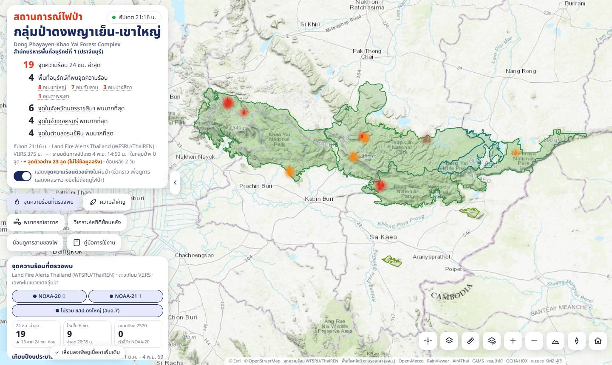
1234567บนมือถือ
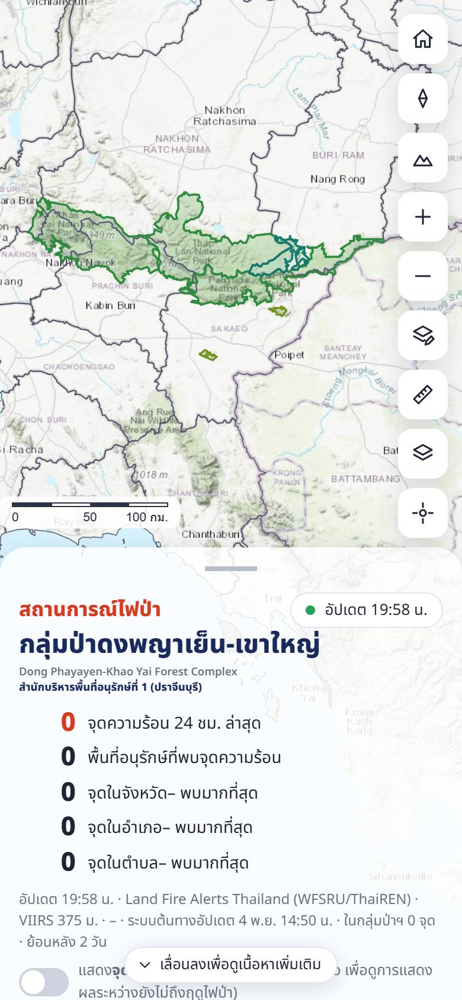
- แผ่นล่าง: ลากแถบเทาด้านบนของแผ่นขึ้นเพื่อขยาย ลากลงเพื่อย่อ หรือเลื่อนเนื้อหาในแผ่นขึ้นลงตามปกติ
- ปุ่มควบคุม: เรียงเป็นคอลัมน์ชิดขวาบน และจะซ่อนเองเมื่อแผ่นล่างถูกดึงขึ้นมาสูงจนบังปุ่ม
- แผงชั้นข้อมูลและแผงรายละเอียดจุด เปิดเป็นแผ่นจากด้านล่างเช่นกัน ปิดด้วยปุ่ม ✕
- ใช้นิ้วสองนิ้วซูม/หมุนแผนที่ ใช้นิ้วเดียวเลื่อน
- กล่องลอย ⌄ เลื่อนลงเพื่อดูเนื้อหาเพิ่มเติม แสดงเมื่อยังมีเนื้อหาด้านล่าง แตะเพื่อเลื่อนลง
ส่วนหัวสรุปสถานการณ์
- ป้าย "อัปเดต HH:MM น." (มุมขวาบน จุดสีเขียว) — เวลาที่หน้าเว็บดึงข้อมูลสำเร็จครั้งล่าสุด
- ตัวเลขสรุป 5 บรรทัด — จุดความร้อนใน 24 ชม. ล่าสุด, จำนวนพื้นที่อนุรักษ์ที่พบจุด (พร้อมรายชื่อย่อ เช่น "8 อช.เขาใหญ่"), จังหวัด อำเภอ และตำบลที่พบมากที่สุด · คลิกชื่อพื้นที่เพื่อซูมไปที่พื้นที่นั้น
- บรรทัดสถานะ — แหล่งข้อมูล (Land Fire Alerts Thailand · WFSRU/ThaiREN), ดาวเทียม VIIRS 375 ม., "ระบบต้นทางอัปเดต …" (เวลาที่ระบบต้นทางประมวลผลรอบล่าสุด อ่านจากหน้าเว็บต้นทาง), จำนวนจุดในกลุ่มป่า และช่วงข้อมูลบนแผนที่ (ย้อนหลัง 2 วัน)
- สวิตช์ "แสดงจุดความร้อนตัวอย่าง" — สร้างจุดปลอมสุ่มในแนวเขตเพื่อดูการทำงานของหน้าจอช่วงที่ไม่มีไฟ (ปิดเป็นค่าเริ่มต้น และจะปิดเองทุกครั้งที่เปิดเว็บใหม่) จุดตัวอย่างมีป้าย "ไม่ใช่ข้อมูลจริง" กำกับทุกที่ ห้ามนำตัวเลขขณะเปิดสวิตช์นี้ไปรายงาน
การ์ดจุดความร้อนที่ตรวจพบ
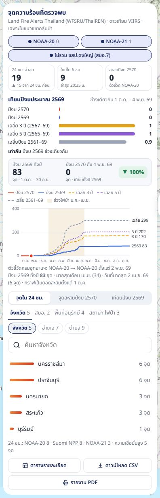
12345678910การคลิกในรายการ
- คลิกชื่อพื้นที่ = ซูมแผนที่ไปที่พื้นที่นั้น และเลือกพื้นที่เป็นตัวกรองของตาราง/CSV/รายงาน (มีป้ายใต้รายการบอกพื้นที่ที่เลือก กด ✕ ที่ป้ายหรือคลิกชื่อเดิมซ้ำเพื่อยกเลิก)
- สถานีฯ นับจุดตามแปลงรับผิดชอบที่จุดอยู่ จุดนอกแปลงรวมเป็น "พื้นที่ไม่มีสถานีฯไฟป่ารับผิดชอบ"
การใช้แผนที่
สัญลักษณ์จุดความร้อน
| สัญลักษณ์ | ความหมาย |
|---|---|
| แดง | ตรวจพบภายใน 6 ชม. |
| ส้ม | 6–24 ชม. |
| น้ำตาล | เก่ากว่า 24 ชม. (แสดงถึง 48 ชม.) |
| วงส้ม | จุดสะสมปีงบ (เมื่อเลือกแท็บ "จุดสะสมปีงบ" ในการ์ด) |
| วงเหลือง | จุดความร้อนของวันที่ภาพดาวเทียมย้อนหลังที่เลือกอยู่ |
คลิกบนแผนที่
- คลิกจุดความร้อน → เปิด แผงรายละเอียดจุดความร้อน ทางขวา
- คลิกตำแหน่งอื่น → ป๊อปอัปข้อมูลตำแหน่ง: พื้นที่อนุรักษ์ สถานีฯ ที่รับผิดชอบ, พื้นที่เผาไหม้/เผาซ้ำซาก (ถ้าเปิดชั้น), ชนิดป่า, พิกัด, สภาพอากาศขณะนั้น, ตำบล/อำเภอ/จังหวัด และลิงก์ นำทางด้วย Google Maps
- คลิกสถานีควบคุมไฟป่า / จุดเฝ้าระวัง / สถานีวัดฝุ่น → ป๊อปอัปชื่อ ที่ตั้ง และลิงก์ Google Maps
- ชี้เมาส์ บนชั้นอากาศแห้ง/สภาพอากาศรายชั่วโมง เพื่อดูค่า ณ ตำแหน่งนั้น
การเลื่อนและซูม
- ลากเพื่อเลื่อน · ล้อเมาส์หรือปุ่ม + − เพื่อซูม · ดับเบิลคลิกเพื่อซูมเข้า
- คลิกขวาค้างแล้วลาก (หรือ Ctrl+ลาก) เพื่อหมุนและเอียง · ปุ่มเข็มทิศเพื่อหันทิศเหนือขึ้น
- ป้ายรหัสจุดเฝ้าระวังและชื่อสถานีฯ จะแสดงเมื่อซูมเข้าใกล้พอ
ปุ่มควบคุมแผนที่
ชี้เมาส์ที่ปุ่มเพื่อดูชื่อปุ่ม (เรียงจากซ้ายไปขวาบนคอมพิวเตอร์ / ล่างขึ้นบนบนมือถือ)
| ปุ่ม | หน้าที่ |
|---|---|
| ตำแหน่งของฉัน | แสดงตำแหน่งปัจจุบันจาก GPS ของอุปกรณ์ (เบราว์เซอร์จะขออนุญาตก่อน) ใช้ดูว่าอยู่ห่างจุดความร้อนเท่าไร |
| ชั้นข้อมูล | เปิด/ปิด แผงชั้นข้อมูล |
| วัดระยะทางและพื้นที่ | ดู เครื่องมือวัด (ปุ่มเป็นสีน้ำเงินเข้มขณะเปิดใช้) |
| วาดและจัดการชั้นข้อมูล | ดู เครื่องมือวาดและชั้นข้อมูลของผู้ใช้ |
| ซูมเข้า / ซูมออก | |
| โหมด 3 มิติ | เอียงแผนที่และแสดงภูมิประเทศนูน (ความสูงขยาย) ดูสันเขาและหุบเขาที่ไฟมักลาม |
| รีเซ็ตทิศเหนือ | หมุนแผนที่ให้ทิศเหนือขึ้นและเลิกเอียง (ไอคอนเข็มทิศหมุนตามทิศของแผนที่) |
| กลับมุมมองเริ่มต้น | ซูมให้เห็นทั้งกลุ่มป่า (จัดให้อยู่กลางช่องที่แผงไม่บัง) |
แป้นลัด: Esc ปิดแผงหรือเครื่องมือที่เปิดอยู่
แผงชั้นข้อมูล
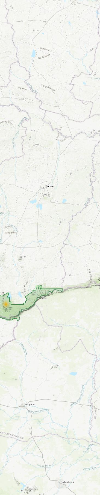
เปิดจากปุ่ม ในปุ่มควบคุม แต่ละแถวมีสวิตช์เปิด/ปิด ชี้เมาส์ที่ชื่อชั้น (หรือแตะชื่อบนจอสัมผัส) เพื่อดูคำอธิบายย่อ ชั้นที่มีตัวเลือกเพิ่มเติมจะแสดงกล่องตั้งค่าใต้แถวเมื่อเปิด
- ตั้งที่เลือกเป็นค่าเริ่มต้น (มุมบนของแผง) — จำชั้นที่เปิด แผนที่ฐาน ดาวเทียม ปุ่มดงใหญ่ และค่าตั้งของกองจุด/Windy ไว้ในเบราว์เซอร์นี้ ครั้งต่อไปจะเปิดมาแบบเดิม (เก็บเฉพาะเครื่องนั้น)
- ค่าเริ่มต้นของระบบ: เปิดจุดความร้อน พื้นที่อนุรักษ์ แหล่งน้ำ ถนน · ปิดเส้นจังหวัดพื้นที่รับผิดชอบสถานีฯ ที่ตั้งสถานีฯ จุดเฝ้าระวัง
- เปิด/ปิดแผงนี้ แผนที่จะเลื่อนให้กลุ่มป่าอยู่กลางช่องที่เหลือเอง
แผนที่ฐาน
กดปุ่มด้านบนสุดของแผงเพื่อเปลี่ยนพื้นหลังของแผนที่ ชั้นข้อมูลอื่นทั้งหมด (จุดความร้อน แนวเขต ฯลฯ) ยังอยู่ครบ · ชี้เมาส์ที่ปุ่มเพื่อดูที่มาของแผนที่
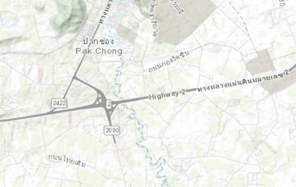
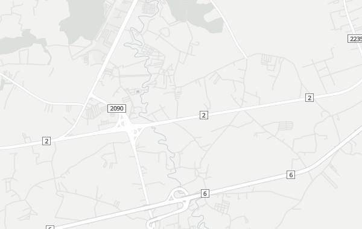
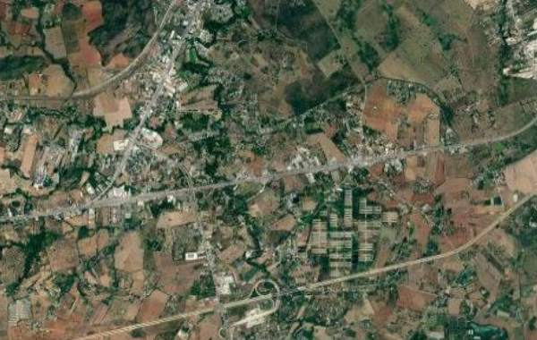
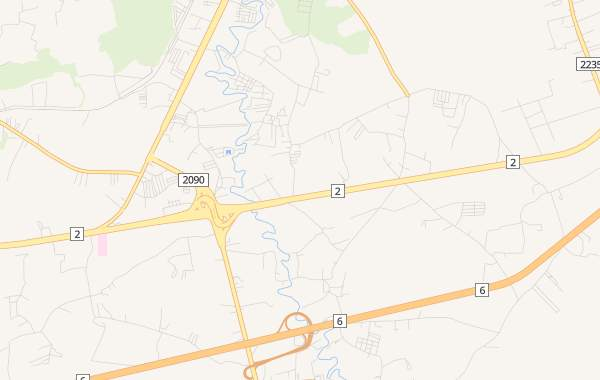
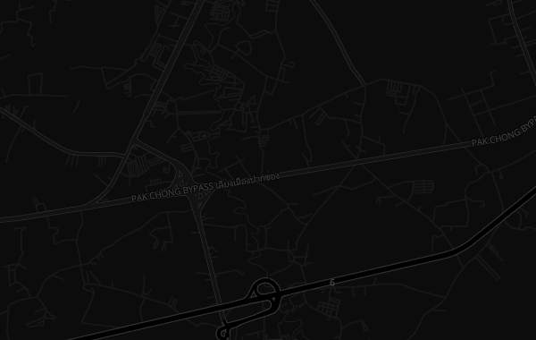
แหล่งภาพดาวเทียมและการดูภาพย้อนหลัง
เมื่อเลือก "ดาวเทียม" จะมีแถวปุ่มแหล่งภาพ และ (ยกเว้น Google) แถบเลื่อนดูภาพย้อนหลัง ‹ › ทีละภาพ กด ล่าสุด เพื่อกลับภาพปัจจุบัน · จุดความร้อนของวันที่ภาพแสดงเป็นวงเหลือง
| ปุ่ม | รายละเอียด | ดูย้อนหลัง |
|---|---|---|
| ภาพละเอียดสูง (ค่าเริ่มต้น) ไม่ทราบวันที่ถ่าย · ถ้าโหลดไม่ได้ ระบบสลับเป็น Esri ให้เอง | – | |
| Esri | World Imagery · ป้ายกลางบนจอบอกวันที่ถ่ายภาพ ณ กลางจอ (เมื่อซูมใกล้พอ) | Esri Wayback — แถบเลื่อนแสดงเฉพาะรุ่นที่ภาพ ณ บริเวณกลางจอเปลี่ยนจริง เรียงตามวันที่ถ่าย ย้อนได้ถึงราว พ.ศ. 2555 · เลื่อนแผนที่แล้วระบบค้นใหม่ · ใช้เทียบสภาพป่าก่อน–หลังไฟไหม้ |
| Sentinel-2 | ภาพไร้เมฆรายปี 10 ม. (EOX Sentinel-2 cloudless, CC BY-NC-SA) | รายปี 2559, 2561–2568 |
| NOAA-20 | ภาพ VIIRS รายวันจาก NASA GIBS ความละเอียดต่ำ เห็นกลุ่มควันและเมฆ | รายวัน ตั้งแต่ 1 ม.ค. 2561 · ขีดบนแถบ = วันที่มีจุดความร้อน · ช่องเลือกวันที่ · ใช้ดูควันไฟวันที่เกิดเหตุ |
มุมมอง 3 มิติ ค่าเริ่มต้น: ปิด
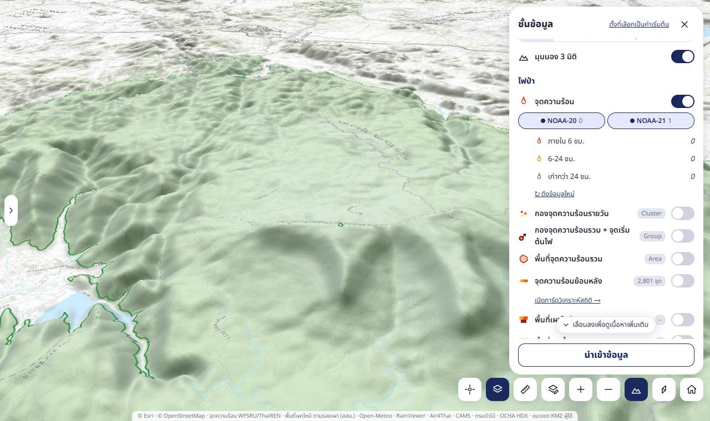
- แสดงภูมิประเทศนูนจากแบบจำลองความสูง (AWS Terrain Tiles) และเอียงแผนที่ เหมือนปุ่ม ในปุ่มควบคุม
- หมุน/เอียง: คลิกขวาค้างแล้วลาก หรือ Ctrl+ลาก · บนจอสัมผัสใช้สองนิ้วหมุนและเลื่อนขึ้นลงพร้อมกันเพื่อเอียง · ปุ่ม กลับทิศเหนือ
- ใช้ทำอะไร: ไฟผิวดินลามขึ้นเขาเร็วกว่าลงเขาหลายเท่า และลามตามร่องหุบที่ลมพัดผ่าน ดูมุมนี้ช่วยประเมินว่าไฟจากจุดความร้อนจะวิ่งไปทางใด และหาสันเขาที่ใช้เป็นแนวควบคุมไฟ
- ใช้กำลังเครื่องมาก ถ้ามือถือช้าให้ปิด
หมวดไฟป่า
จุดความร้อน ค่าเริ่มต้น: เปิด
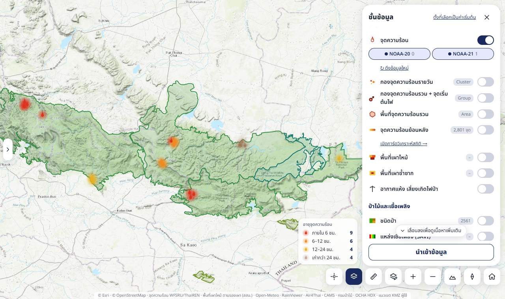
- แสดงจุด VIIRS 48 ชม. ล่าสุด เฉพาะในแนวเขต สีตามอายุ: ภายใน 6 ชม. 6–24 ชม. เก่ากว่า 24 ชม. · จุดใหม่มีวงเรืองแสงรอบจุด
- ปุ่มดาวเทียม (NOAA-20 / NOAA-21) ใต้สวิตช์ = ชุดเดียวกับในการ์ด ตัวเลขบนปุ่ม = จุดสะสมปีงบของดวงนั้น · ตัวเลขขวาของแต่ละแถวอายุ = จำนวนจุดบนแผนที่ขณะนี้
- ↻ ดึงข้อมูลใหม่ ดึงทันที (ปกติดึงเองทุก 5 นาที)
- คลิกจุด → แผงรายละเอียด · ชี้เมาส์ → ป้ายเวลาและดาวเทียม
- ดาวเทียมหลายดวงอาจตรวจไฟเดียวกันในเวลาใกล้กัน จึงเห็นจุดซ้อนกัน 2–3 จุดได้ · ใช้ กองจุดความร้อน เพื่อนับเป็น "เหตุการณ์"
กองจุดความร้อนรายวัน Cluster ค่าเริ่มต้น: ปิด
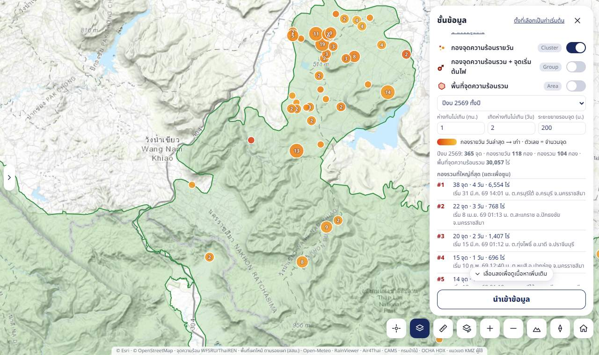
- นิยาม: จุดที่เกิดวันเดียวกัน (เวลาไทย) และห่างกันไม่เกินระยะที่กำหนด (ค่าเริ่มต้น 1 กม.) ต่อเนื่องกันเป็นลูกโซ่ = 1 กอง
- อ่านแผนที่: วงกลมอยู่กลางกอง ขนาดและตัวเลขตามจำนวนจุด · สี แดง = วันล่าสุดของช่วง ไล่ไป เหลือง = วันเก่า · กองจุดเดียวเป็นวงเล็ก
- คลิกกอง → ป๊อปอัป วันที่ จำนวนจุด ช่วงเวลาที่พบ ดาวเทียม ตำบล/อำเภอ กองรวมที่กองนี้สังกัด และปุ่ม "กระจายจุด" (ใช้แทนดับเบิลคลิกบนจอสัมผัส)
- ใช้ทำอะไร: นับ "ไฟรายวัน" แทนการนับจุด (ไฟ 1 แห่งอาจให้จุดหลายจุดจากหลายพิกเซลและหลายดาวเทียม) และดูว่าวันไหนไฟกระจายตัวกว้าง
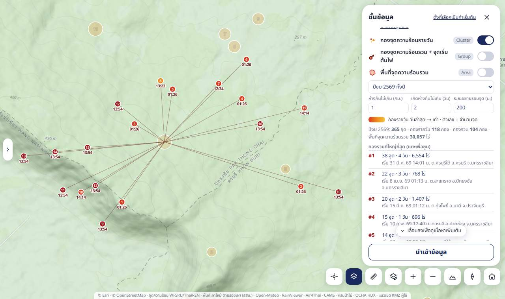
กองจุดความร้อนรวม + จุดเริ่มต้นไฟ Group ค่าเริ่มต้น: ปิด
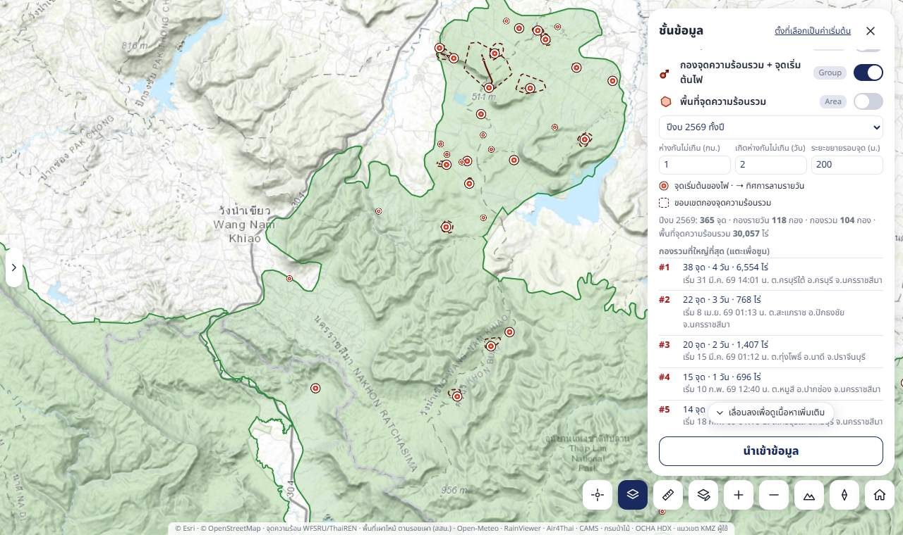
- นิยาม: รวมจุดที่ห่างกันไม่เกินระยะที่กำหนด และเกิดห่างกันไม่เกินจำนวนวันที่กำหนด (ค่าเริ่มต้น 1 กม. · 2 วัน) เป็นไฟเหตุการณ์เดียวกัน แม้ไหม้ต่อเนื่องหลายวัน
- วงเป้า = จุดเริ่มต้นไฟ คือจุดที่ดาวเทียมพบในรอบแรกสุดของกอง (ถ้ารอบแรกมีหลายจุดใช้จุดกึ่งกลาง) · กองที่มีจุดเดียวใช้ไอคอนเล็ก
- เส้นลูกศร จากจุดเริ่มต้นไปยังกึ่งกลางจุดของแต่ละวันถัดมา = ทิศทางการลุกลาม · เส้นประ = ขอบเขตกอง (แสดงเมื่อปิดสวิตช์พื้นที่)
- คลิกวงเป้า → ป๊อปอัปสรุปกองรวม เช่น วันเวลาเริ่มต้น จำนวนวัน จำนวนจุด และพื้นที่
- ใช้ทำอะไร: หาว่าไฟมักเริ่มจากตรงไหน (ขอบป่าติดไร่ ทางเข้าป่า) เพื่อวางจุดลาดตระเวน/ประชาสัมพันธ์ และดูทิศทางที่ไฟใหญ่เคลื่อนไป
พื้นที่จุดความร้อนรวม Area ค่าเริ่มต้น: ปิด
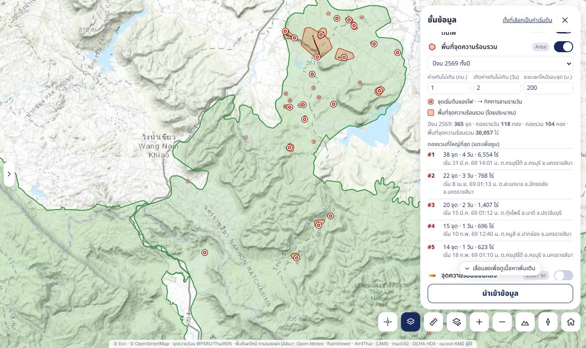
- รูปหลายเหลี่ยมนูนครอบทุกจุดของกองรวม รวมระยะเผาไหม้รอบจุดตามที่กำหนด (ค่าเริ่มต้น 200 ม. ≈ ครึ่งพิกเซล VIIRS) · คลิกเพื่อดูไร่
- ไม่ใช่พื้นที่เผาไหม้จริง — เป็นบริเวณที่ความร้อนกระจายตัวโดยประมาณ กองที่ยาวโค้งจะได้พื้นที่เกินจริง ใช้ดูขนาดเหตุการณ์คร่าวๆ ระหว่างรอข้อมูล พื้นที่เผาไหม้ (ออกช้ากว่าราว 9 วัน)
- ช่วงเวลา — 48 ชม. / 7 วัน / 30 วัน / ปีงบปัจจุบัน / ปีงบก่อน (เมื่อมีข้อมูล)
- ห่างกันไม่เกิน (กม.) 0.1–10 (ค่าเริ่มต้น 1) · เกิดห่างกันไม่เกิน (วัน) 0–30 (ค่าเริ่มต้น 2) · ระยะเผาไหม้รอบจุด (ม.) 50–2,000 (ค่าเริ่มต้น 200) · คืนค่าเริ่มต้น — ตัวอย่างปีงบ 2569: 1 กม./2 วัน/200 ม. = กองรายวัน 118 กองรวม 104 / 2 กม./5 วัน = กองรวม 94
- สรุปจำนวนจุด/กอง/ไร่ และรายการ 5 กองรวมใหญ่สุด แตะเพื่อซูมและเปิดป๊อปอัป
- ใช้จุดทุกดาวเทียมตามปุ่มดาวเทียมและปุ่มดงใหญ่ · วิธีคิดดู การจัดกองจุดความร้อน
จุดความร้อนย้อนหลัง ค่าเริ่มต้น: ปิด
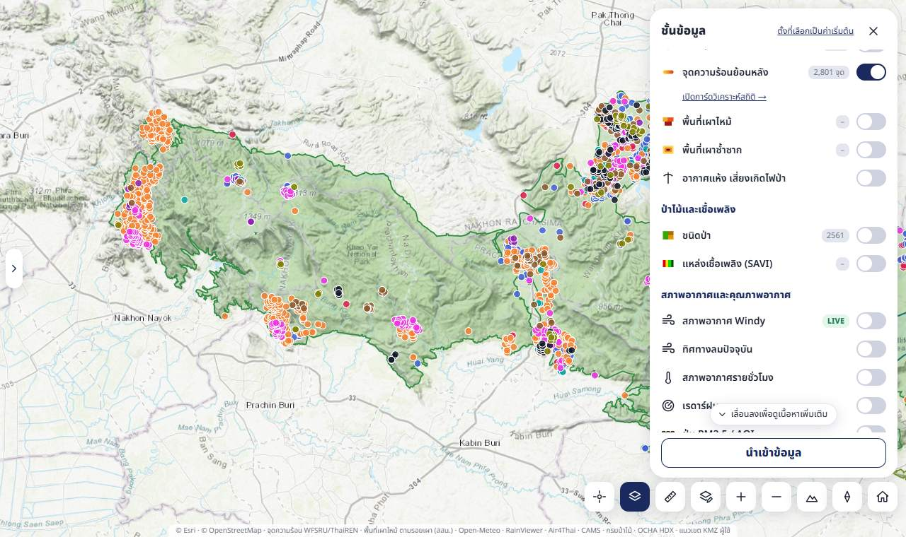
- จุดของกรมอุทยานแห่งชาติฯ ปีงบ 2561–2569 (Suomi NPP, ตรวจสอบภาคสนามแล้ว) ตัวเลขบนแถว = จำนวนจุดตามตัวกรองปัจจุบัน
- จุดที่แสดง รูปแบบ (จุด / Cluster / ความหนาแน่น) และสี (ปีงบ / ประเภทพื้นที่ / การจัดการเชื้อเพลิง) ตั้งในการ์ดวิเคราะห์สถิติ — ลิงก์ เปิดการ์ดวิเคราะห์สถิติ →
- คลิกจุด → วันที่ เวลา ตำบล พื้นที่อนุรักษ์ สถานีฯ ประเภทพื้นที่ และการจัดการเชื้อเพลิง/ผลการตรวจสอบ
- ใช้ทำอะไร: หาพื้นที่ที่ไหม้ซ้ำทุกปี เพื่อวางแผนลาดตระเวน แนวกันไฟ และการจัดการเชื้อเพลิงล่วงหน้า
พื้นที่เผาไหม้ ค่าเริ่มต้น: ปิด
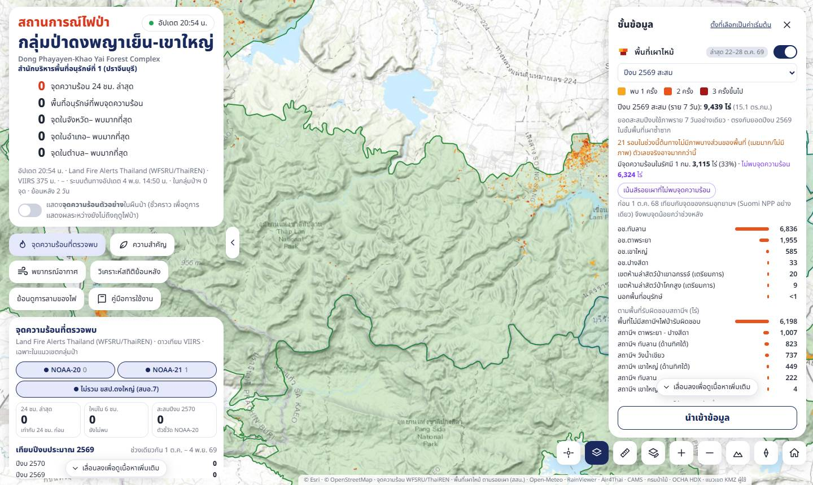
- รอยเผาไหม้จริงจากภาพดาวเทียม Sentinel-2 ความละเอียด 20 ม. (ระบบตามรอยเผา สสน.) เฉพาะในพื้นที่อนุรักษ์และพื้นที่รับผิดชอบสถานีฯ · ป้ายบนแถวบอกรอบล่าสุดที่มีข้อมูล
- ช่องเลือกช่วง: สะสมปีงบ (ค่าเริ่มต้น) / รายรอบ 7 วัน / แยกประเภทรายเดือน / แยกประเภทรายฤดูฝุ่น (ธ.ค.–เม.ย.)
- สี (สะสมและราย 7 วัน): พบ 1 ครั้ง 2 ครั้ง 3 ครั้งขึ้นไป (ครั้ง = จำนวนภาพที่เห็นรอยในรอบ)
- กล่องสรุป: ไร่รวม (และ ตร.กม.) · คำเตือนรอบที่ขาดภาพ (เมฆ) · ไร่ที่มีจุดความร้อนในรัศมี 1 กม. (%) · แท่งรายรอบของปีงบ (แตะเพื่อดูรอบนั้น) · ไร่แยกพื้นที่อนุรักษ์และสถานีฯ
- ดาวน์โหลด CSV แถวละ รอบ × พื้นที่อนุรักษ์ × สถานีฯ × ประเภท (ไร่ และไร่ที่มีจุดความร้อน) · รายงาน PDF แผนที่ + พื้นที่เผาไหม้ + แหล่งเชื้อเพลิง
- แตะแผนที่บนรอยเผา → รอบที่พบ จำนวนครั้ง ประเภท และพบจุดความร้อนใกล้หรือไม่
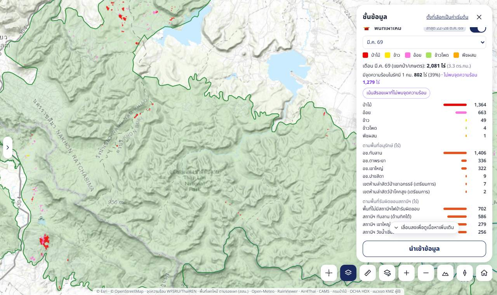
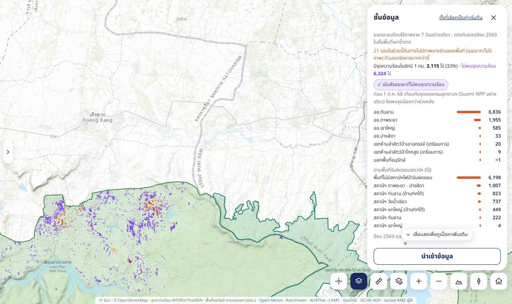
ใช้ทำอะไร: ยืนยันขนาดพื้นที่ไหม้จริงหลังเหตุ รายงานผลการปฏิบัติงาน และตรวจไฟที่ดาวเทียมจุดความร้อนตกหล่น · ข้อมูลออกช้ากว่าสิ้นรอบราว 9 วัน · วิธีคิดดู พื้นที่เผาไหม้
พื้นที่เผาซ้ำซาก ค่าเริ่มต้น: ปิด
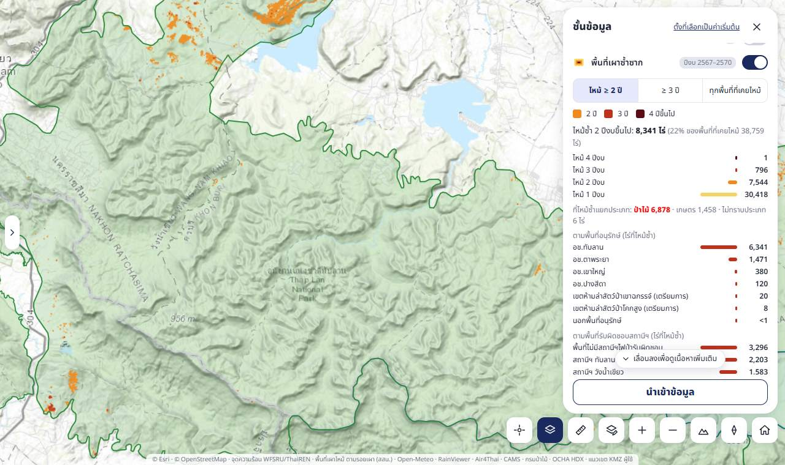
- พิกเซล 20 ม. ที่พบรอยเผาไหม้มากกว่า 1 ปีงบ จากข้อมูลตามรอยเผาทุกชุดตั้งแต่ ธ.ค. 2566
- ตัวเลือก ไหม้ ≥ 2 ปี (ค่าเริ่มต้น) / ≥ 3 ปี / ทุกพื้นที่ที่เคยไหม้ · สี 1 ปี 2 ปี 3 ปี 4 ปีขึ้นไป
- สรุปไร่ตามจำนวนปี · ไหม้ซ้ำแยกป่าไม้/เกษตร · แยกพื้นที่อนุรักษ์และสถานีฯ · ตารางรายปีงบ (พร้อมหมายเหตุว่าทำไมยอดรายปีอาจต่างจากชั้นพื้นที่เผาไหม้)
- แตะแผนที่ → ปีงบที่ไหม้และประเภท
- ใช้ทำอะไร: จัดลำดับพื้นที่ทำแนวกันไฟ ลาดตระเวน และจัดการเชื้อเพลิงก่อนฤดูไฟ (พื้นที่ไหม้ซ้ำมักเป็นจุดที่มีคนเข้าไปจุดไฟเป็นประจำ)
อากาศแห้ง เสี่ยงเกิดไฟป่า ค่าเริ่มต้น: ปิด
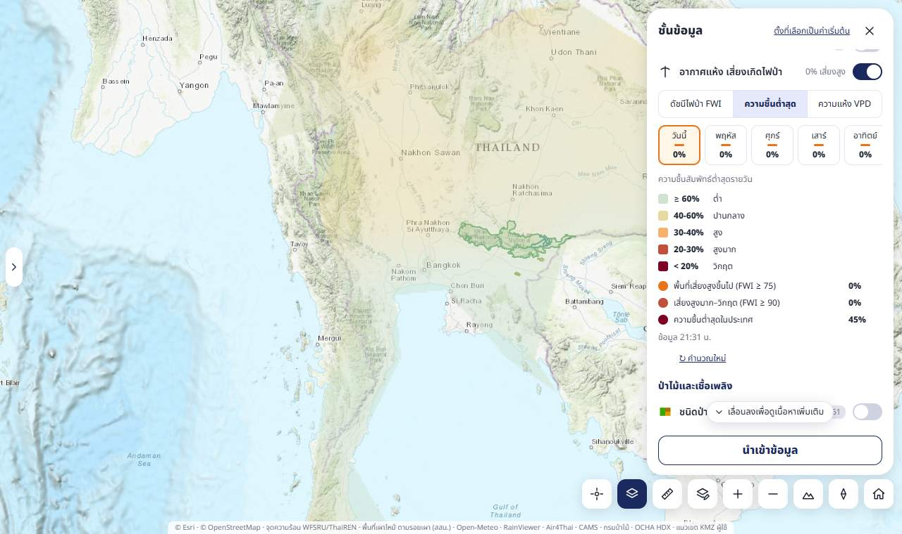
- พื้นผิวสีทั้งประเทศจากพยากรณ์รายวัน Open-Meteo (ตาราง ~110 กม.) เลือกได้ 3 ดัชนี: ดัชนีไฟป่า FWI (CBI ปรับด้วยลมและฝน) / ความชื้นต่ำสุด / ความแห้ง VPD
- ชิปเลือกวัน (วันนี้และวันถัดไป) · คำอธิบายสี 5 ระดับ ต่ำ ปานกลาง สูง สูงมาก วิกฤต · สรุปจำนวนพื้นที่เสี่ยงสูงขึ้นไป (FWI ≥ 75) เสี่ยงสูงมาก–วิกฤต (FWI ≥ 90) และตำแหน่งที่ความชื้นต่ำสุดในประเทศ
- ชี้เมาส์บนแผนที่ดูค่า · ↻ คำนวณใหม่
- ใช้ทำอะไร: ดูแนวโน้มความเสี่ยงล่วงหน้า เพื่อเตรียมกำลัง ประกาศงดเผา · ตารางหยาบ ไม่สะท้อนหุบเขาแต่ละแห่ง · เกณฑ์ดู ดัชนีอันตรายไฟป่า
หมวดป่าไม้และเชื้อเพลิง
ชนิดป่า 2561 ค่าเริ่มต้น: ปิด
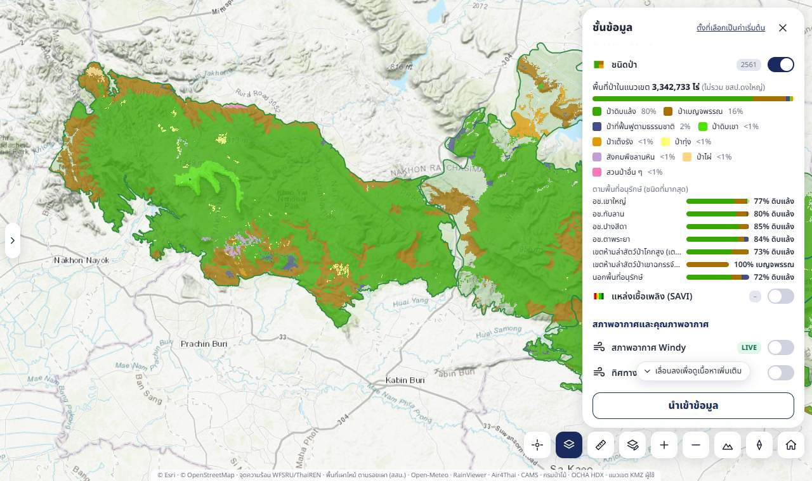
- ชนิดป่าจาก shapefile ของกรมป่าไม้ (โครงการจัดทำข้อมูลสภาพพื้นที่ป่าไม้ ปี 2560–2561) กริด 50 ม. เฉพาะในแนวเขต · ส่วนใหญ่เป็นป่าดิบแล้ง (~2.81 ล้านไร่) และป่าเบญจพรรณ (~0.54 ล้านไร่)
- กล่องสรุป: แท่งซ้อนไร่ต่อชนิดป่าในแต่ละพื้นที่อนุรักษ์ (ตามปุ่มดงใหญ่) · แตะแผนที่ → ชนิดป่า ณ จุดนั้น
- ใช้ทำอะไร: ป่าเต็งรังและเบญจพรรณไฟลามเร็วตามใบไม้แห้ง ป่าดิบแล้งไฟลามช้าแต่เผาลึกและฟื้นตัวนาน · โมเดลไฟในแผงรายละเอียดใช้ชั้นนี้เลือกเชื้อเพลิงอัตโนมัติ
แหล่งเชื้อเพลิง (SAVI) ค่าเริ่มต้น: ปิด
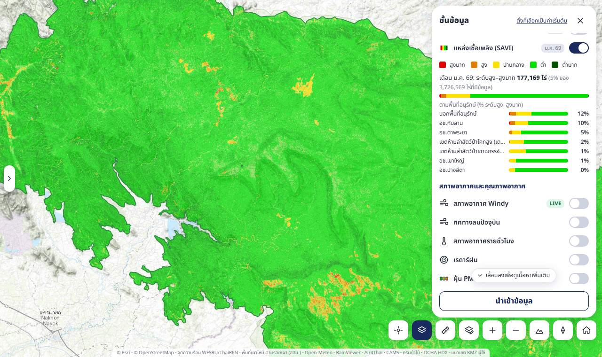
- 5 ระดับ สูงมาก สูง ปานกลาง ต่ำ ต่ำมาก · SAVI ต่ำ (พืชโปร่ง แห้ง ผลัดใบ ดินโล่ง) = ระดับสูง · ไม่มีสี = ไม่มีข้อมูล (เช่น เมฆ)
- กล่องสรุป: เลือกเดือน (เมื่อมีหลายเดือน) · แท่งสัดส่วนต่อพื้นที่อนุรักษ์ เรียงตาม % ระดับสูง–สูงมาก (ตัวเลขตามปุ่มดงใหญ่)
- ใช้ทำอะไร: ดูความต่อเนื่องของเชื้อเพลิงแห้งก่อนฤดูไฟ เลือกแนวทำแนวกันไฟและพื้นที่จัดการเชื้อเพลิง · วิธีคิดดู SAVI
หมวดสภาพอากาศและคุณภาพอากาศ
สภาพอากาศ Windy LIVE ค่าเริ่มต้น: ปิด
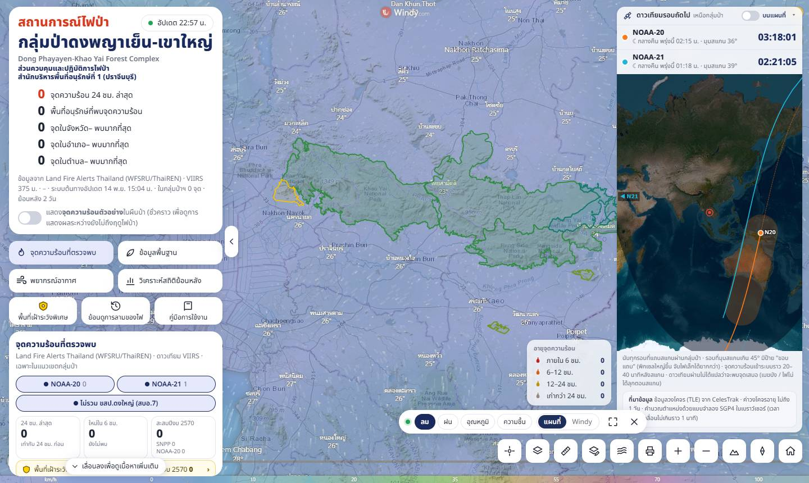
เหมือนปุ่มเมนู "พยากรณ์อากาศ" · กล่องตั้งค่า: เลือกชั้น (ลม ฝน อุณหภูมิ ความชื้น เรดาร์ ดาวเทียม PM2.5 ความเสี่ยงไฟป่า), เวลา ตอนนี้ / +12 / +24 ชม., ความเข้ม 20–100% (ยิ่งสูงแผนที่ฐานยิ่งจาง), และค่าสภาพอากาศกลางกลุ่มป่าตอนนี้ · รายละเอียดดู พยากรณ์อากาศ Windy
ทิศทางลมปัจจุบัน ค่าเริ่มต้น: ปิด
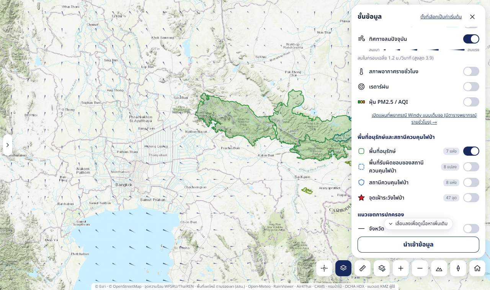
- เส้นลมเคลื่อนไหวตามบริเวณที่มองเห็น ปรับทุก 15 นาที · หัวเส้นแหลมชี้ทิศที่ลมพัดไป · ยิ่งยาวยิ่งแรง 5 ระดับ (ต่ำกว่า 1 ถึงเกิน 8 ม./วินาที) · บนภาพดาวเทียมเส้นเป็นสีขาว
- ใช้ทำอะไร: ไฟผิวดินลามไปทางลมพัดไป ควันก็ไปทางเดียวกัน · ใช้คู่กับจุดความร้อนเพื่อคาดว่าหมู่บ้านใดอยู่ใต้ลม
สภาพอากาศรายชั่วโมง ค่าเริ่มต้น: ปิด
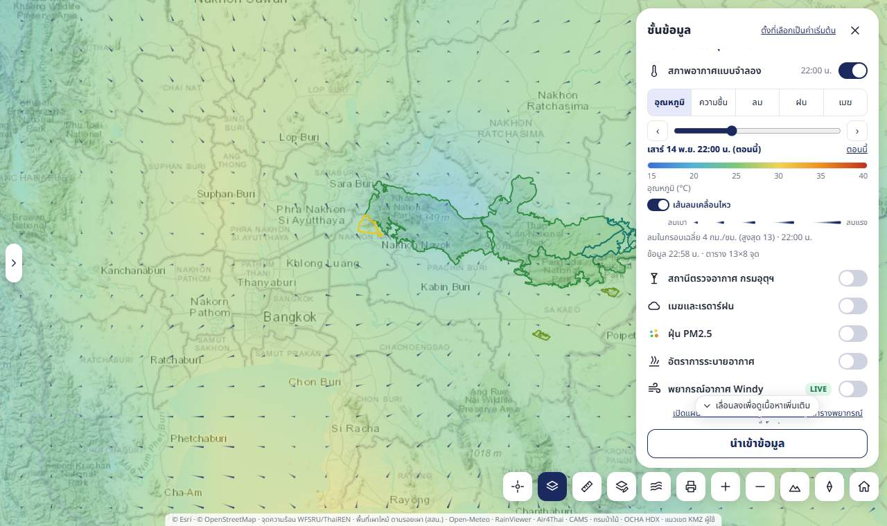
- แบบจำลอง Open-Meteo (~10–25 กม.) ตามบริเวณที่มองเห็น เลือก อุณหภูมิ / ความชื้น / ฝน / เมฆ
- แถบเลื่อนเวลา ย้อนหลัง 24 ชม. ถึงพยากรณ์ 48 ชม. · ‹ › ทีละชั่วโมง · ตอนนี้ · ชี้เมาส์ดูค่า
- ใช้ทำอะไร: ช่วงบ่ายที่ความชื้นต่ำสุดและร้อนสุดไฟลุกลามแรงที่สุด ใช้เลือกเวลาเข้าดับไฟ (เช้ามืด/ค่ำ) และดูว่าจะมีฝนช่วยหรือไม่
เรดาร์ฝน ค่าเริ่มต้น: ปิด
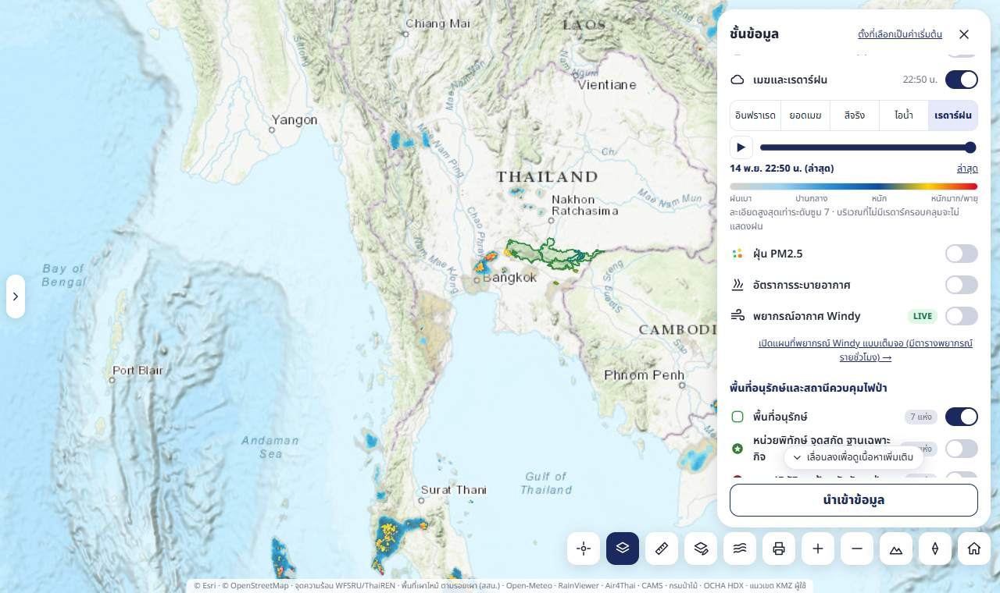
- เรดาร์ตรวจอากาศจาก RainViewer ย้อนหลัง 2 ชม. ทุก 10 นาที · ▶ เล่นภาพเคลื่อนไหว · แถบเลื่อนเวลา · ล่าสุด
- สีจากฝนเบา (ฟ้าอ่อน) ถึงหนักมาก/พายุ (เหลือง–แดง) · ละเอียดสูงสุดเท่าซูม 7 · บริเวณที่ไม่มีเรดาร์ครอบคลุมจะไม่แสดงฝน
- ใช้ทำอะไร: ดูว่ามีฝนตกในพื้นที่ไฟหรือกำลังเคลื่อนเข้ามา
ฝุ่น PM2.5 / AQI ค่าเริ่มต้น: ปิด
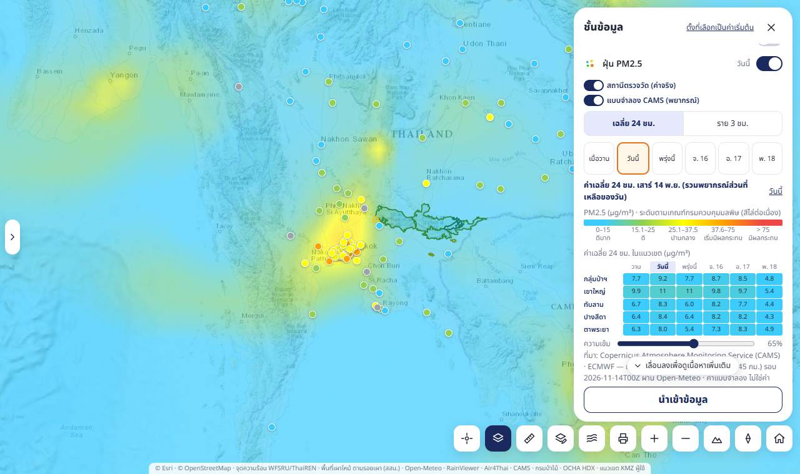
- สี่เหลี่ยม = สถานี Air4Thai (กรมควบคุมมลพิษ) ค่าล่าสุด คลิกดูชื่อสถานีและค่า · พื้นผิวสี = แบบจำลอง CAMS (~110 กม.) ครอบคลุมประเทศเพื่อนบ้าน
- สลับ AQI (เกณฑ์ US EPA) / PM2.5 (µg/m³) · ชิปเลือกวัน (ปัจจุบัน/พยากรณ์) · คำอธิบายสี
- ใช้ทำอะไร: ใช้ร่วมกับชั้นลมดูควันจากไฟป่าและควันข้ามแดน · เกณฑ์สีดู AQI
ลิงก์ เปิดแผนที่พยากรณ์ Windy แบบเต็มจอ → ท้ายหมวด เปิดหน้า Windy เต็มจอที่มีตารางพยากรณ์รายชั่วโมง
หมวดพื้นที่อนุรักษ์และสถานีควบคุมไฟป่า
พื้นที่อนุรักษ์ 7 แห่ง ค่าเริ่มต้น: เปิด
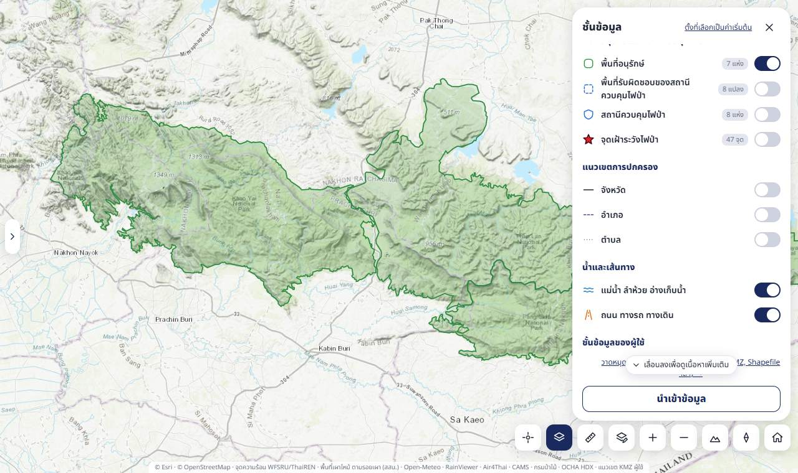
แนวเขตจากไฟล์ KMZ ของหน่วยงาน สีต่อพื้นที่ (ชี้ชื่อชั้นเพื่อดูคำอธิบายสี) · คลิกในพื้นที่ → ชื่อพื้นที่ ประเภท สังกัด ขนาด · เป็นขอบเขตที่ระบบใช้กรองจุดความร้อน
พื้นที่รับผิดชอบของสถานีควบคุมไฟป่า 8 แปลง ค่าเริ่มต้น: ปิด
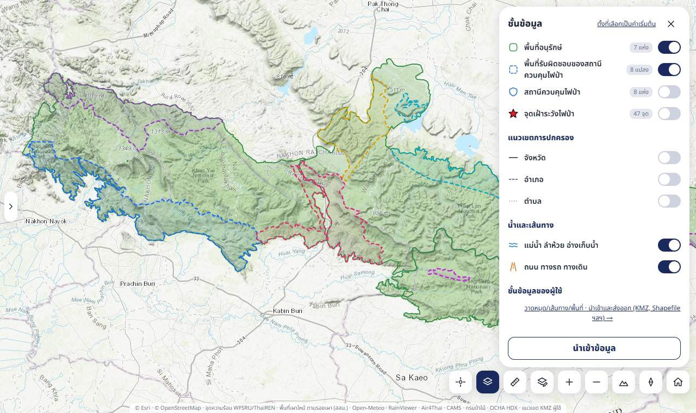
แปลงรับผิดชอบของสถานีควบคุมไฟป่า 8 แห่ง ข้อมูลปี 2570 (บางแปลงอยู่นอกพื้นที่อนุรักษ์) · คลิกในแปลง → สถานีฯ ที่รับผิดชอบ สังกัด ชนิดป่า · ใช้ระบุว่าจุดความร้อนเป็นความรับผิดชอบของสถานีใด
สถานีควบคุมไฟป่า 8 แห่ง ค่าเริ่มต้น: ปิด
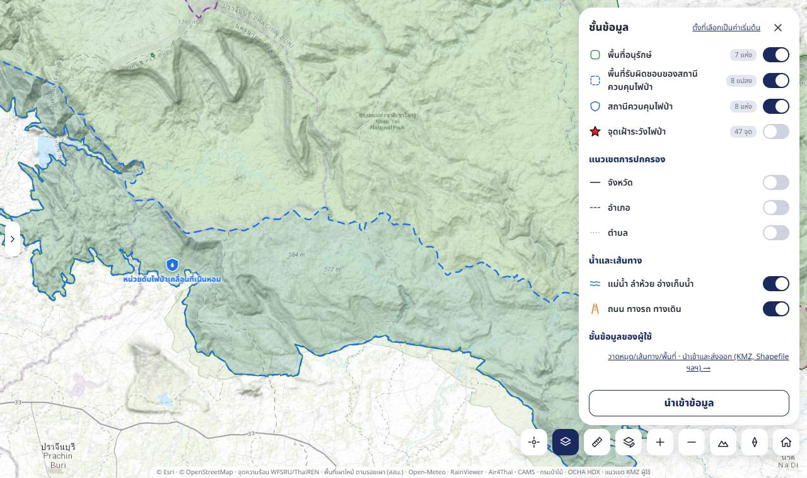
ที่ตั้งตามไฟล์ KMZ · ซูมเข้าเพื่อดูชื่อสถานี · คลิก → ชื่อ สังกัด พิกัด และลิงก์นำทาง Google Maps · ใช้ประเมินระยะเดินทางจากสถานีถึงจุดไฟ (ใช้ เครื่องมือวัด ช่วย)
จุดเฝ้าระวังไฟป่า 47 จุด ค่าเริ่มต้น: ปิด
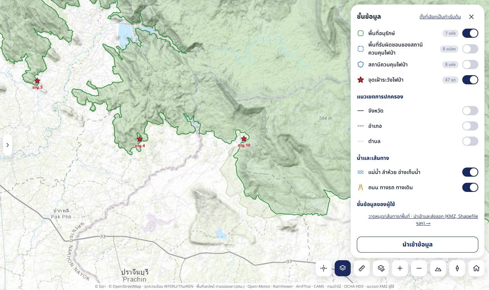
จุดเฝ้าระวังไฟป่า ปี 2569 ตามไฟล์ KMZ · ซูมเข้าเพื่อดูรหัสจุด (เช่น ขญ.1) · คลิก → สถานีฯ หมู่บ้าน หมู่ ตำบล อำเภอ จังหวัด ประเภทพื้นที่ พิกัด UTM และลิงก์ Google Maps
หมวดแนวเขตการปกครอง และน้ำและเส้นทาง
จังหวัด อำเภอ ตำบล
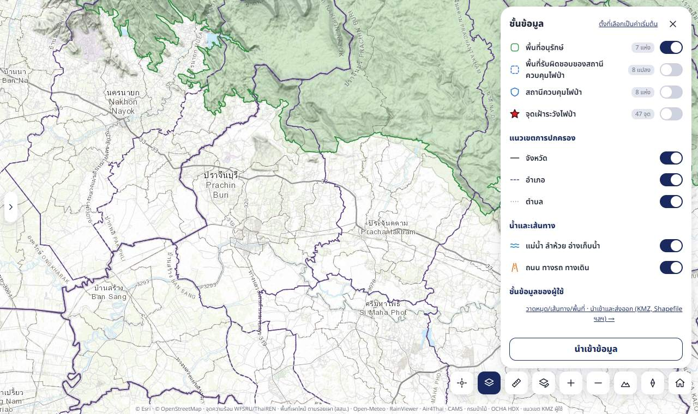
- จังหวัด 77 จังหวัด · อำเภอ และตำบล (ค่าเริ่มต้นปิดทั้งสาม) เฉพาะ 18 จังหวัดรอบกลุ่มป่า ตำบลแสดงเมื่อซูมเข้า — กรมการปกครอง ผ่าน OCHA HDX (2565)
- แตะแผนที่ที่ใดก็ได้ ป๊อปอัปบอกตำบล อำเภอ จังหวัด (แม้ไม่ได้เปิดเส้น)
แม่น้ำ ลำห้วย อ่างเก็บน้ำ ถนน ทางรถ ทางเดิน
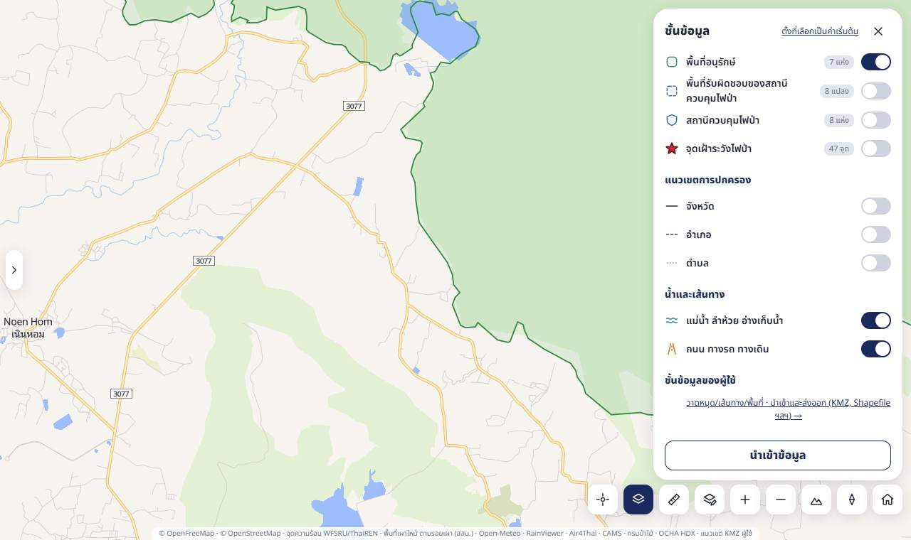
เปิด/ปิดแหล่งน้ำและถนนของแผนที่ฐานแบบเวกเตอร์ (มีผลกับแผนที่ฐาน เรียบ ถนน/ชุมชน โทนมืด เท่านั้น) · ค่าเริ่มต้นเปิด · ใช้หาแหล่งน้ำสำหรับดับไฟและเส้นทางเข้าถึง หรือปิดเพื่อให้แผนที่ในรายงานโล่งขึ้น
ชั้นข้อมูลของผู้ใช้ และปุ่มนำเข้าข้อมูล
- ลิงก์ วาดหมุด/เส้นทาง/พื้นที่ · นำเข้าและส่งออก → เปิด เครื่องมือวาด
- ปุ่ม นำเข้าข้อมูล ท้ายแผง — นำเข้าไฟล์จุดความร้อนย้อนหลัง (.xlsx .csv .geojson รูปแบบเดียวกับไฟล์ Excel ของกรมอุทยานฯ) เลือกได้ว่าจะเพิ่มต่อจากข้อมูลเดิม (ข้ามจุดซ้ำ) หรือแทนที่ทั้งหมด แล้วเปิดการ์ดสถิติให้วิเคราะห์ทันที — มีผลเฉพาะหน้าที่เปิดอยู่ โหลดหน้าใหม่แล้วกลับเป็นข้อมูลเดิม ประมวลผลในเบราว์เซอร์ทั้งหมด ไม่อัปโหลดไปไหน (ชั้นประเภทอื่นยังไม่รองรับ — ใช้เครื่องมือวาดแทน)
แผงรายละเอียดจุดความร้อน
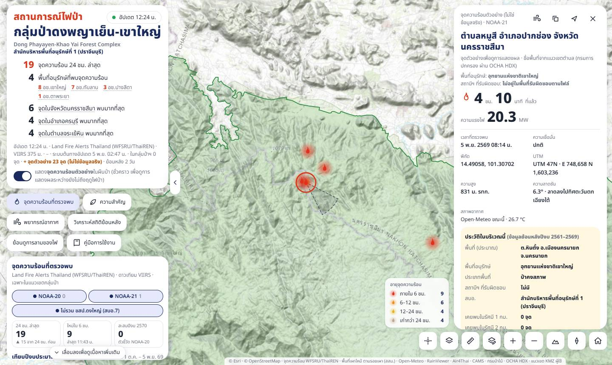
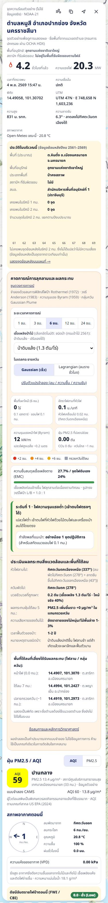
ส่วนหัวและข้อมูลจุด
- ปุ่มด้านบน: ลม (เปิดชั้น Windy แล้วซูมไปที่จุด) · คัดลอกพิกัดและลิงก์ · นำทางด้วย Google Maps · ปิด
- ชื่อพื้นที่ ตำบล อำเภอ จังหวัด · พื้นที่อนุรักษ์ · สถานีฯ ที่รับผิดชอบ
- อายุ (ชั่วโมงที่แล้ว) · ความแรงไฟ (FRP, MW) — API ไทยไม่ส่งค่า FRP จึงแสดง "–" สำหรับจุดจริง
- เวลาที่ตรวจพบ = เวลาที่ดาวเทียมสแกน (เวลาไทย) · ความเชื่อมั่น (ต่ำ/ปกติ/สูง) · พิกัด ทศนิยม และ UTM · ความสูง และความลาดชันพร้อมทิศลาด (จากแบบจำลองความสูง)
ประวัติในบริเวณนี้
จากข้อมูลย้อนหลังกรมอุทยานฯ: ประเภทพื้นที่ สถานีฯ สบอ. · เคยพบในรัศมี 1 กม. / 2 กม. · กราฟจำนวนจุดในรัศมี 2 กม. แยกปีงบ · ปุ่ม แสดงจุดย้อนหลังบนแผนที่ → — จุดที่ไหม้ซ้ำทุกปีมักเป็นพื้นที่เผาเพื่อหาของป่า/เตรียมพื้นที่เกษตร
คาดการณ์การลุกลามและผลกระทบ
จำลองว่าถ้าไฟนี้ลุกลามโดยไม่มีการควบคุม จะเป็นอย่างไรในช่วงเวลาที่เลือก ผลแสดงบนแผนที่เป็นวงรีไฟ 3 ช่วงเวลา (1/3, 2/3 และเต็มช่วง) และกรวยหรือพื้นผิวกลุ่มควัน กด ซูมดูวงคาดการณ์
- ระยะเวลาคาดการณ์ 1 / 3 / 6 / 12 / 24 ชม.
- เชื้อเพลิงป่าไม้ — ระบบเลือกให้อัตโนมัติจากชั้นชนิดป่า (ถ้าไม่มีข้อมูลใช้แปลงรับผิดชอบสถานีฯ และความสูง) เหตุผลแสดงในวงเล็บ เปลี่ยนเองได้ 5 แบบ: เบญจพรรณ เต็งรัง ดิบแล้ง ดิบเขา/สน ไผ่
- โมเดลกระจายควัน — Gaussian (เร็ว ลมคงที่ เป็นกรวย) หรือ Lagrangian (อนุภาค 2,000 ตัวพัดตามลมพยากรณ์รายชั่วโมง เห็นควันเลี้ยวตามลม และขอบไฟโตแบบ Huygens)
- ปรับตัวแปรจำลอง — ความเร็วลม ทิศที่ลมพัดมา ความชื้นสัมพัทธ์ ความชัน (ค่าเริ่มต้นดึงจากสภาพอากาศจริงและแบบจำลองความสูง ณ จุดนั้น) · ใช้ค่าทดสอบ (หัวข้อ 7.3) ใช้ชุดค่ามาตรฐานที่ใช้สอบเทียบโมเดล
ผลลัพธ์:
| ค่า | ความหมาย |
|---|---|
| พื้นที่ไหม้ (ไร่) | พื้นที่วงรีไฟเมื่อครบระยะเวลา |
| อัตราไฟลามที่หัวไฟ (ม./นาที) | ความเร็วหน้าไฟด้านที่ลามเร็วที่สุด (มีข้างไฟและท้ายไฟในสมการ) |
| ความรุนแรงหน้าไฟ Byram (kW/m) | พลังงานความร้อนต่อความยาวหน้าไฟ ใช้แบ่งระดับการเข้าดับ |
| ฝุ่น PM2.5 ที่ปลดปล่อย (ตัน) | จากมวลชีวมวลที่ไหม้ × ค่าสัมประสิทธิ์การปลดปล่อยตามชนิดป่า |
| ระดับความรุนแรง 1–4 | จากความยาวเปลวไฟ พร้อมแนวทางการเข้าดับ (ดูตารางใน วิธีคิด) |
| ความชื้นสมดุลเชื้อเพลิงตาย (EMC) | ยิ่งต่ำ เชื้อเพลิงยิ่งแห้ง ติดไฟง่าย (ไฟดับเองเมื่อ EMC ≥ 24%) |
| ผลกระทบสิ่งแวดล้อม | ทิศหัวไฟ/ทิศควัน (แยกกันเมื่อความลาดชันทำให้ไฟลามคนละทางกับลม), มวลชีวมวลที่ถูกเผา, PM2.5 ในกลุ่มควัน, อัตราตายของไม้หนุ่ม, เวลาฟื้นตัวของป่า |
| พื้นที่ใต้ลมที่เสี่ยง | พิกัดและตำบลของหน้าไฟ จุดใต้ลม 7 กม. และปลายกลุ่มควัน |
กด ข้อสมการและหลักการวิทยาศาสตร์ เพื่อดูสมการพร้อมตัวเลขที่ใช้จริงของจุดนั้น
ฝุ่น PM2.5 / AQI และสภาพอากาศ ณ จุด
- ฝุ่น — ค่าแบบจำลอง CAMS ณ จุด สลับ AQI/PM2.5 พร้อมคำแนะนำด้านสุขภาพ
- สภาพอากาศตอนนี้ — เข็มทิศลม (ลูกศรชี้ทิศที่ลมพัดไป) อุณหภูมิ ความชื้น ลม · ความแห้งของอากาศ VPD · ดัชนีอันตรายไฟป่าตอนนี้ (FWI/CBI) พร้อมคำอธิบายและตารางพยากรณ์รายวัน
วิเคราะห์สถิติย้อนหลัง
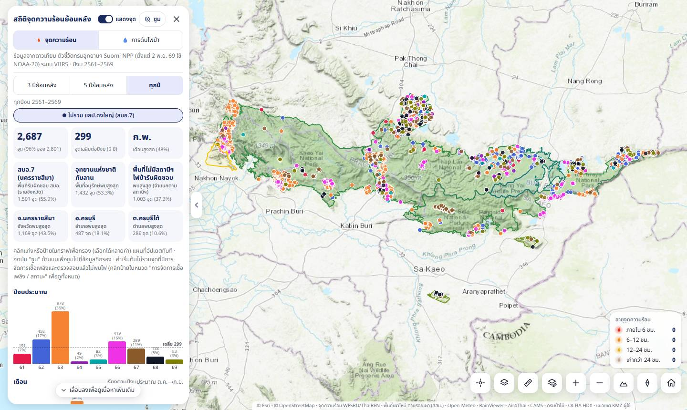
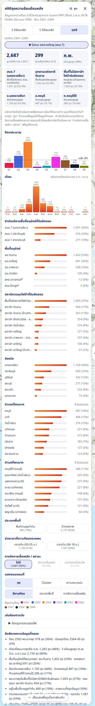
ใช้ข้อมูลจุดความร้อนของกรมอุทยานแห่งชาติ สัตว์ป่า และพันธุ์พืช ปีงบ 2561–2569 (3,154 จุด, Suomi NPP) ที่ตรวจสอบภาคสนามแล้ว
- ช่วงปี — 3 ปีย้อนหลัง / 5 ปีย้อนหลัง / ทุกปี (นับเฉพาะปีงบที่จบแล้ว)
- ปุ่มไม่รวมดงใหญ่ — สถานะเดียวกับในการ์ดหลัก
- การ์ดตัวเลข (KPI) — จำนวนจุด (และ % ของทั้งหมด), เฉลี่ยต่อปีงบ, เดือนที่พบมากสุด, สบอ. พื้นที่อนุรักษ์ สถานีฯ จังหวัด อำเภอ ตำบลที่พบมากสุด · คลิกการ์ดเพื่อกรอง
- กราฟ ปีงบประมาณ (เส้นประ = ค่าเฉลี่ย) · เดือน (เรียง ต.ค.→ก.ย.) · สบอ. · พื้นที่อนุรักษ์ · สถานีฯ · จังหวัด · อำเภอ/ตำบล 8 อันดับ · ประเภทพื้นที่ (ป่าคงสภาพ/พื้นที่ราษฎรทำกิน) · ช่วงเวลาที่ตรวจพบ (กลางคืน/กลางวัน) · การจัดการเชื้อเพลิง/สถานะ
- คลิกแท่งหรือป้ายในกราฟเพื่อกรอง เลือกได้หลายค่า ทุกกราฟและแผนที่อัปเดตทันที · ซูม ไปที่ข้อมูลที่กรอง · รีเซ็ต คืนค่าเริ่มต้น
- ค่าเริ่มต้นไม่รวมจุดที่มีการจัดการเชื้อเพลิงและจุดที่ตรวจสอบแล้วไม่พบไฟ (เลือกเฉพาะ "ไม่มี") — คลิกป้าย "ไม่มี" ซ้ำเพื่อดูทั้งหมด
- แสดงบนแผนที่ — จุด / Cluster / ความหนาแน่น และสีตามปีงบ / ประเภทพื้นที่ / การจัดการเชื้อเพลิง
- ข้อสังเกตจากข้อมูลที่กรอง — สรุปข้อความอัตโนมัติ เช่น ปีที่มากสุด/น้อยสุด เดือนที่พบมาก แนวโน้ม
- ปุ่มท้ายการ์ด: ตารางรายละเอียด · ดาวน์โหลด CSV · รายงาน PDF (KPI กราฟ แผนที่ ตารางสรุป 8 หมวด ข้อสังเกต และตารางรายจุดเมื่อไม่เกิน 500 จุด)
ย้อนดูการลามของไฟ
แผงลอยด้านล่างแผนที่ (เปิดจากปุ่มเมนู "ย้อนดูการลามของไฟ" หรือปุ่มในการ์ดสถิติ) เล่นจุดความร้อนย้อนหลังทีละวันตามตัวกรองของการ์ดสถิติ
- ▶ เล่น / หยุด · ลากแถบเลื่อนเพื่อไปวันใดก็ได้ · วันที่แสดงที่หัวแผง
- ย้อนหลัง 1 / 3 / 7 / 30 วัน = แสดงจุดสะสมกี่วันก่อนหน้าวันปัจจุบันของภาพ
- ความเร็ว ×1 ×2 ×4 · ปุ่ม ✕ ออกจากโหมดเล่น
ตาราง CSV และรายงาน PDF
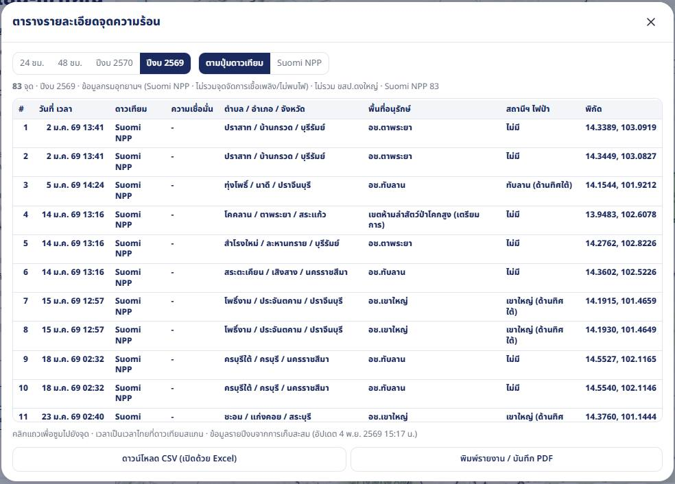
ตารางรายละเอียด
- ช่วงข้อมูล: 24 ชม. · 48 ชม. · ปีงบปัจจุบัน (ข้อมูล API ทุกดาวเทียม) · ปีงบก่อน (ข้อมูลกรมอุทยานฯ ชุดเดียวกับการ์ด ไม่รวมจุดจัดการเชื้อเพลิง/ไม่พบไฟ)
- ดาวเทียม: "ตามปุ่มดาวเทียม" หรือเลือกดวงเดียว
- กรองตามปุ่มดงใหญ่และพื้นที่ที่เลือกในรายการการ์ด · เรียงจุดเก่าสุดก่อน · แสดง 300 แถวแรก (CSV/รายงานมีครบ) · คลิกแถวเพื่อซูมไปยังจุด
- คอลัมน์: ลำดับ วันที่เวลา ดาวเทียม ความเชื่อมั่น ตำบล/อำเภอ/จังหวัด พื้นที่อนุรักษ์ สถานีฯ พิกัด
ดาวน์โหลด CSV
ไฟล์ UTF-8 มี BOM เปิดด้วย Excel ได้ภาษาไทยถูกต้องทันที มีพิกัด UTM และลิงก์ Google Maps ของแต่ละจุด ชื่อไฟล์บอกช่วงและตัวกรอง
รายงาน PDF
- กด รายงาน PDF (หรือ "พิมพ์รายงาน / บันทึก PDF" ในตาราง)
- ระบบถ่ายภาพแผนที่ตามมุมมองที่เห็นอยู่ (รวมสถานีฯ จุดเฝ้าระวัง และชั้นที่เปิด) — จัดมุมมอง/ชั้นข้อมูลให้เรียบร้อยก่อนกด แผนที่ฐาน "เรียบ" อ่านง่ายที่สุดเมื่อพิมพ์
- หน้าต่างพิมพ์ของเบราว์เซอร์เปิดขึ้น เลือกเครื่องพิมพ์ "บันทึกเป็น PDF" (Save as PDF) แล้วกดบันทึก
เนื้อหารายงานหลัก: สรุปตัวเลข การเทียบปีงบ กราฟ แผนที่ ตารางตามพื้นที่ พื้นที่เผาไหม้ แหล่งเชื้อเพลิง และรายละเอียดจุด
พยากรณ์อากาศ Windy
ชั้นซ้อนบนแผนที่ (ปุ่ม "พยากรณ์อากาศ")
- ชิปเลือกชั้น: ลม · ฝน · อุณหภูมิ · ความชื้น · เรดาร์ · ดาวเทียม (ภาพเมฆ) · PM2.5 (CAMS) · ความเสี่ยงไฟป่า (Windy เรียก "ไฟลุกลาม" พยากรณ์ 10 วัน)
- แผนที่ | Windy — "แผนที่" (ค่าเริ่มต้น) ซูมลื่น คลิกจุดความร้อน/แนวเขตได้ตามปกติ ภาพ Windy โหลดใหม่หลังหยุดเลื่อน · "Windy" ควบคุมภาพ Windy โดยตรง (แตะดูค่าบนภาพ เลื่อนตามเวลา) แผนที่และแนวเขตเลื่อนตาม
- ขณะเปิดชั้นนี้ ซูมใกล้ได้ไม่เกินระดับที่ Windy รองรับ (ราวระดับที่เห็นทั้งอำเภอ) ปิดชั้นแล้วซูมได้ตามปกติ
- ปรับความเข้มของภาพในแผงชั้นข้อมูล · ⛶ เปิดแบบเต็มจอ · ✕ ปิดชั้น
แบบเต็มจอ
มีแท็บชั้นเดียวกัน และตารางพยากรณ์รายชั่วโมงของจุดกลางภาพ (กดปุ่มแสดงตาราง) · กดปุ่มเล่นด้านล่างของ Windy เพื่อดูพยากรณ์ล่วงหน้า · Esc ปิด · เปิดตรงได้ด้วยลิงก์ ?wy=wind
หน้าความสำคัญของผืนป่า
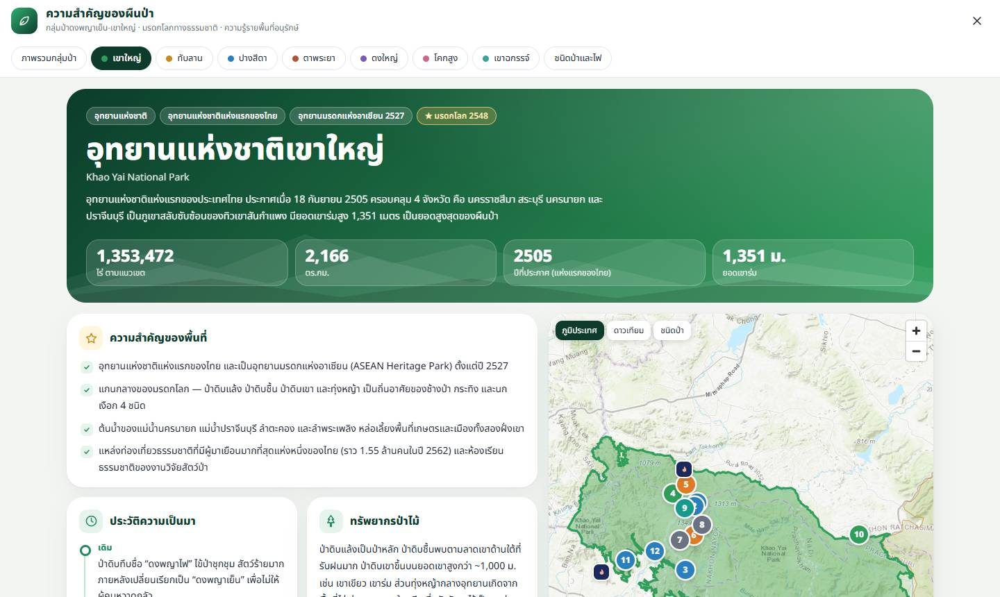
- แท็บภาพรวม: กลุ่มป่าดงพญาเย็น-เขาใหญ่ในฐานะมรดกโลกทางธรรมชาติ (UNESCO พ.ศ. 2548) ความหลากหลายทางชีวภาพ รายการพื้นที่ เส้นทางการอนุรักษ์ ภัยคุกคาม และสายด่วนแจ้งไฟป่า 1362
- แท็บรายพื้นที่อนุรักษ์ (เขาใหญ่ ทับลาน ปางสีดา ตาพระยา ดงใหญ่ เขาฉกรรจ์ โคกสูง): ขนาดพื้นที่ ความสำคัญ ประวัติ ทรัพยากรป่าไม้ (ไร่ต่อชนิดป่า) สัตว์ป่าเด่นพร้อมสถานภาพ IUCN แหล่งท่องเที่ยว (ปักหมุดบนแผนที่ประกอบ) และสถิติไฟป่าในพื้นที่ (รายปีงบ รายเดือน สถานีฯ จุดเฝ้าระวัง) พร้อมปุ่มซูมแผนที่หลัก
- แท็บชนิดป่าและไฟ: ลักษณะชนิดป่าแต่ละแบบกับพฤติกรรมไฟ และจำนวนจุดความร้อนตามชนิดป่า
- เปิดตรงด้วยลิงก์
?kb=ky(ky เขาใหญ่ · tl ทับลาน · ps ปางสีดา · tp ตาพระยา · dy ดงใหญ่ · ks เขาฉกรรจ์ · kc โคกสูง · ft ชนิดป่า)
เครื่องมือวัดระยะทางและพื้นที่
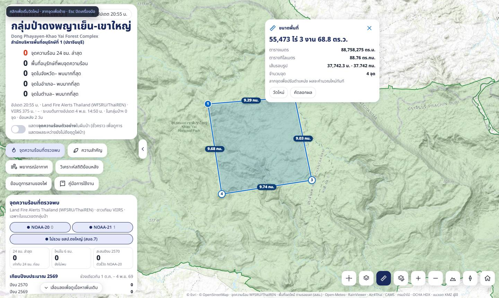
บนคอมพิวเตอร์
- กดปุ่ม ในปุ่มควบคุม
- คลิกบนแผนที่ทีละจุด — ระยะแต่ละช่วงแสดงบนเส้น และป้ายข้างเคอร์เซอร์บอกระยะสะสม
- ดับเบิลคลิก หรือ Enter เพื่อจบการวัดระยะ · คลิกที่จุดแรก (เมื่อมี 3 จุดขึ้นไป) เพื่อปิดรูปและวัดพื้นที่
- ลากจุดเพื่อย้ายได้ทั้งระหว่างวาดและหลังจบ ผลคำนวณใหม่ทันที · Backspace ย้อนจุดล่าสุด · Esc ปิดเครื่องมือ
- แผงผล: ย้อนจุด / จบ / ปิดรูปพื้นที่ / ล้าง / วัดใหม่ / คัดลอกผล (พร้อมพิกัดทุกจุด)
บนมือถือ/แท็บเล็ต
กลางแผนที่มีกากบาทเล็ง — เลื่อนแผนที่ให้กากบาทอยู่ตรงตำแหน่งที่ต้องการแล้วกด + เพิ่มจุด (แตะบนแผนที่ตรงๆ ก็ได้) เมื่อกากบาทเข้าใกล้จุดแรก จะดูดติดเพื่อปิดรูป
วิธีคำนวณดูที่ การวัดระยะและพื้นที่
เครื่องมือวาดและชั้นข้อมูลของผู้ใช้
ปุ่ม ในปุ่มควบคุม (หรือลิงก์ท้ายแผงชั้นข้อมูล) เปิดแผง "เครื่องมือวาดและชั้นข้อมูล" ใช้บันทึกตำแหน่งแนวกันไฟ เส้นทางลาดตระเวน พื้นที่ไฟไหม้ที่เดินสำรวจ ฯลฯ
วาด
- เลือก ปักหมุด เส้นทาง หรือ รูปหลายเหลี่ยม
- คลิกบนแผนที่ (หมุด = คลิกเดียว · เส้น = คลิกทีละจุด ดับเบิลคลิกจบ · รูปหลายเหลี่ยม = คลิกจุดแรกหรือดับเบิลคลิกจบ) บนจอสัมผัสใช้กากบาท + ปุ่ม "+ เพิ่มจุด" เหมือนเครื่องมือวัด
- กรอกฟอร์ม: ชื่อ รายละเอียด สี ชั้นที่จะบันทึก และข้อมูลเพิ่มเติม (ชื่อช่อง–ค่า) · ระหว่างนี้ลากจุดเพื่อแก้รูป ลากจุดกลางเส้นเพื่อเพิ่มจุด ดับเบิลคลิกจุดเพื่อลบ
- กด บันทึก แล้ววาดต่อได้ทันที
คลิกวัตถุที่วาดแล้ว → ป๊อปอัปแสดงระยะ/พื้นที่ พิกัด UTM ข้อมูล ปุ่มแก้ไข ลบ นำทาง (พื้นที่ขนาดใหญ่จะแสดงเป็นบรรทัดบนสุดของป๊อปอัปตำแหน่งแทน เพื่อไม่บังข้อมูลอื่น)
จัดการชั้น นำเข้า ส่งออก
- ในเครื่องนี้ — ชั้นที่สร้าง/นำเข้าเก็บในเบราว์เซอร์นั้นเท่านั้น (ล้างข้อมูลเบราว์เซอร์ = หาย ควรส่งออกสำรองไว้) · เปิด/ปิด ซูม เปลี่ยนชื่อ สี ลบ แต่ละชั้น
- นำเข้าไฟล์ หรือลากไฟล์มาวางที่แผง: GeoJSON, Esri JSON, KML/KMZ (สี โฟลเดอร์ ข้อมูลเพิ่มเติม), GPX, Shapefile (.zip หรือเลือก .shp .dbf .prj พร้อมกัน — รองรับ UTM 47/48, Indian 1975, ภาษาไทย TIS-620/UTF-8), CSV (คอลัมน์ละติจูด/ลองจิจูด หัวไทยได้, องศาลิปดา, UTM x/y + โซน หรือ WKT)
- ส่งออก…: KMZ/KML (Google Earth), Shapefile (เลือก WGS84 หรือ UTM 47N/48N, แยกไฟล์จุด/เส้น/พื้นที่), GeoJSON, GPX (เครื่อง GPS), CSV
- จากเซิร์ฟเวอร์ — ชั้นข้อมูลกลางที่ผู้ดูแลระบบอัปโหลดให้ เปิดดูได้ตามสิทธิ์ (บางชั้นทุกคน บางชั้นต้องล็อกอินหรือเฉพาะกลุ่ม) ผู้ใช้ทั่วไปดูและส่งออกได้ แต่แก้ไขไม่ได้ · ปุ่ม ↻ ดึงรายการใหม่ · บัญชีผู้ใช้ขอได้จากผู้ดูแลระบบ
ลิงก์ตรงไปยังตำแหน่งหรือหน้า
เติมต่อท้ายที่อยู่เว็บ (เช่น …/fire-map-dpky/?ar=tl) เพื่อส่งให้ผู้อื่นเปิดตรงไปยังสิ่งที่ต้องการ (การ์ด LINE และ Telegram ใช้ลิงก์เหล่านี้)
| ลิงก์ | ผล |
|---|---|
?hs=14.49,101.31 | เปิดแผงรายละเอียดของจุดความร้อน ณ พิกัดนั้น (ถ้าจุดเก่ากว่า 48 ชม. จะซูมไปและวงตำแหน่งให้แทน) |
?bb=ตะวันตก,ใต้,ตะวันออก,เหนือ | ซูมให้เห็นกรอบพิกัดนั้น |
?ar=ky | ซูมไปที่พื้นที่อนุรักษ์ (ky tl ps tp dy ks kc) |
?kb=tl | เปิดหน้าความสำคัญที่แท็บนั้น |
?wy=rain | เปิด Windy เต็มจอที่ชั้นนั้น |
การแจ้งเตือนผ่าน LINE และ Telegram
ระบบส่งข้อความเข้ากลุ่มสนทนาโดยอัตโนมัติ (ผู้ดูแลระบบเป็นผู้เพิ่มบอทเข้ากลุ่ม)
| ข้อความ | เมื่อไร / เนื้อหา |
|---|---|
| แจ้งเตือนจุดใหม่ | เมื่อมีจุดความร้อนใหม่ในแนวเขต (ตรวจทุกรอบประมาณ 10 นาที, จุดที่ตรวจพบภายใน 12 ชม., ไม่รวม ขสป.ดงใหญ่) · LINE: การ์ด 7 ใบ (ภาพรวม + 6 พื้นที่อนุรักษ์ พื้นที่ที่มีจุดใหม่ขึ้นก่อน) · Telegram: ข้อความรายจุด แยกตามพื้นที่ พร้อมลิงก์ 📍 Google Maps และ 🔥 แผนที่ไฟป่า และตารางสะสมปีงบเทียบปีก่อน |
| สรุปประจำวัน | ทุกเช้า 07:30 น. — ยอด 24 ชม. สะสมปีงบ เทียบปีก่อนทั้งปีงบ จังหวัด/อำเภอ/ตำบลสูงสุด และกราฟรายเดือน |
| พื้นที่เผาไหม้ | เมื่อมีข้อมูลรอบ 7 วันใหม่ที่มีรอยเผา ≥ 1 ไร่ — ไร่ในรอบ % ที่มีจุดความร้อนใกล้ สะสมปีงบ พื้นที่ที่ไหม้มากสุด และสถานีฯ 3 อันดับ |
คำสั่งในกลุ่ม LINE (พิมพ์หรือกดปุ่มด่วนเหนือช่องพิมพ์)
| พิมพ์ | บอทตอบ |
|---|---|
สรุป | การ์ดสรุปสถานการณ์ล่าสุด |
เผาไหม้ | การ์ดพื้นที่เผาไหม้รอบล่าสุด |
ช่วยเหลือ หรือ วิธีใช้ | รายการคำสั่ง |
การตอบคำสั่งไม่นับโควตาข้อความของ LINE ส่วนการแจ้งเตือนอัตโนมัตินับโควตาตามจำนวนสมาชิกกลุ่ม ปุ่มในการ์ดเปิดแผนที่ตรงไปยังจุดหรือพื้นที่นั้น
ข้อมูลและวิธีคิด
จุดความร้อนจากดาวเทียม
- เครื่องวัด: VIIRS (Visible Infrared Imaging Radiometer Suite) บนดาวเทียม Suomi NPP, NOAA-20 (JPSS-1) และ NOAA-21 (JPSS-2) ใช้แบนด์อินฟราเรดความละเอียด 375 ม. หนึ่งจุด = พิกเซลราว 375×375 ม. (ราว 88 ไร่) ที่มีความร้อนผิดปกติ ตำแหน่งจริงของไฟอาจอยู่ที่ใดก็ได้ในพิกเซล และคลาดเคลื่อนเพิ่มขึ้นที่ขอบแนวสแกน
- เวลาผ่าน: ดาวเทียมวงโคจรขั้วโลกผ่านประเทศไทยวันละ 2 ช่วงต่อดวง ประมาณ 01:00–03:00 น. และ 12:00–14:30 น. (ดวงต่างๆ ห่างกันราว 50 นาที) ไฟที่เกิดและดับระหว่างรอบ หรือไฟใต้เรือนยอด/เมฆหนา อาจตรวจไม่พบ
- ความเชื่อมั่น (low / nominal / high) มาจากอัลกอริทึมตรวจจับ — ต่ำ = อาจเป็นสัญญาณรบกวนหรือพื้นผิวร้อน
- แหล่งข้อมูล: Land Fire Alerts Thailand ของหน่วยวิจัยไฟป่า (WFSRU) / ThaiREN ซึ่งระบุตำบล อำเภอ จังหวัด และพื้นที่ป่าให้แต่ละจุดแล้ว
- กรองเฉพาะในแนวเขต: ระบบเก็บและแสดงเฉพาะจุดที่อยู่ในแนวเขตพื้นที่อนุรักษ์หรือพื้นที่รับผิดชอบสถานีฯ (จากไฟล์ KMZ ของหน่วยงาน)
การรับข้อมูลและการอัปเดต
- ระบบบน GitHub Actions ดึงข้อมูล 48 ชม. ทั้งประเทศทุกประมาณ 10 นาที กรองในแนวเขต แล้วเผยแพร่เป็นไฟล์
live.json· หน้าเว็บอ่านไฟล์นี้ก่อน ถ้าเก่ากว่า 40 นาทีจะดึงจาก API โดยตรง - หน้าเว็บที่เปิดค้างไว้ดึงข้อมูล 3 ชม. ล่าสุดทุก 5 นาที และดึงเต็ม 48 ชม. ทุก 30 นาที (หยุดดึงเมื่อสลับไปแท็บอื่น และดึงทันทีเมื่อกลับมา)
- ข้อมูลสะสม (ยอดปีงบ ตารางปีงบ กองจุด ภาพดาวเทียมย้อนหลัง) — ระบบดึงย้อนหลังรายวันวันละ 4 รอบ (06:17, 09:17, 15:17, 18:17 น.) เก็บทุกดาวเทียมตั้งแต่ 1 ต.ค. 2568 และดึงซ้ำ 7 วันล่าสุดทุกรอบเพื่อเติมจุดที่ตกหล่น
- แหล่งสำรอง: วันที่ API ไทยไม่มีข้อมูลดาวเทียมดวงใด ระบบเติมจาก NASA FIRMS (ป๊อปอัปจุดบอก "ที่มา: NASA FIRMS") และลบออกเมื่อ API ไทยมีข้อมูลแล้ว
- ตัดจุดซ้ำ: API ไทยบางช่วงมีจุดเดียวกัน 2 ระเบียน (ดาวเทียมและวันเดียวกัน เวลาต่าง 1–3 นาที ห่างไม่เกิน ~165 ม.) ระบบเก็บไว้ระเบียนเดียว
ดาวเทียมตัวชี้วัดและปีงบประมาณ
- ปีงบประมาณ = 1 ต.ค. ถึง 30 ก.ย. ปีถัดไป (ปีงบ 2570 = 1 ต.ค. 2569 – 30 ก.ย. 2570)
- กรมอุทยานแห่งชาติฯ ใช้จุดจาก Suomi NPP เป็นตัวชี้วัด · Suomi NPP หยุดส่งข้อมูลถาวร 2 พ.ย. 2569 จึงใช้ NOAA-20 แทนตั้งแต่วันที่ 2 พ.ย. 2569 ทั้งวัน
- ยอดสะสมปีงบในการ์ด/LINE/Telegram = จุดของดาวเทียมตัวชี้วัดในแต่ละวัน (ก่อน 2 พ.ย. 2569 = SNPP, ตั้งแต่นั้น = NOAA-20) ส่วนแผนที่แสดงทุกดวง
- ข้อควรรู้: ดาวเทียมแต่ละดวงตรวจพบจำนวนจุดต่างกันเล็กน้อย ยอดปีที่ใช้ NOAA-20 จึงเทียบกับปีก่อนที่ใช้ SNPP ได้ในเชิงแนวโน้ม แต่ไม่ใช่ชุดเดียวกันพอดี
การเทียบกับปีก่อนและค่าเฉลี่ย
- ปีก่อน ใช้ข้อมูลจุดความร้อนของกรมอุทยานฯ (ไฟล์ Excel ปีงบ 2561–2569, Suomi NPP) ซึ่งผ่านการตรวจสอบภาคสนาม ไม่รวมจุดที่มีการจัดการเชื้อเพลิง (ชิงเผา) และจุดที่ตรวจสอบแล้วไม่พบไฟ — ปีงบ 2569 จึงนับ 120 จาก 133 จุด (83 จุดเมื่อไม่รวมดงใหญ่)
- ช่วงเวลาเดียวกัน = 1 ต.ค. ถึงวันที่เดียวกันของปีก่อน · ทั้งปีงบก่อน = ทั้ง 12 เดือน
- ค่าเฉลี่ย 3 ปี / 5 ปี / ทุกปีงบ = เฉลี่ยของปีงบที่จบแล้ว (รวมปีงบก่อน)
- % เปลี่ยนแปลง = (ปีนี้ − ปีก่อน) ÷ ปีก่อน × 100 · ปีก่อนเป็น 0 แต่ปีนี้มีจุด = "▲ ใหม่"
- ปีปัจจุบัน (จาก API) ยังไม่มีข้อมูลการตรวจสอบภาคสนาม จึงนับทุกจุด
กติกาการจัดพื้นที่
- พื้นที่อนุรักษ์/สถานีฯ: หาว่าพิกัดของจุดอยู่ในแนวเขตใด (จากไฟล์ KMZ แนวเขตพื้นที่อนุรักษ์ สบอ.1, ขสป.ดงใหญ่ และพื้นที่รับผิดชอบไฟป่า ปี 2570) จุดนอกแปลงรับผิดชอบเรียกว่า "พื้นที่ไม่มีสถานีฯไฟป่ารับผิดชอบ"
- สบอ. แยกตามจังหวัดที่เกิดจุด: สบอ.1 (ปราจีนบุรี) = ปราจีนบุรี นครนายก สระแก้ว · สบอ.1 สาขาสระบุรี = สระบุรี · สบอ.7 (นครราชสีมา) = นครราชสีมา บุรีรัมย์
- "ไม่รวม ขสป.ดงใหญ่" ตัดจุดที่อยู่ในเขตรักษาพันธุ์สัตว์ป่าดงใหญ่ หรืออยู่นอกพื้นที่อนุรักษ์แต่ในพื้นที่รับผิดชอบของสถานีฯ ดงใหญ่
- ตำบล อำเภอ จังหวัด: ใช้ชื่อจาก API ถ้ามี ไม่มีจึงหาจากแนวเขตการปกครอง (กรมการปกครอง ผ่าน OCHA HDX ฉบับ 2565)
การจัดกองจุดความร้อน
- เชื่อมจุดสองจุดเข้ากองเดียวกันเมื่อห่างกันไม่เกิน D กม. (และสำหรับกองรวม เกิดห่างกันไม่เกิน G วัน) แบบลูกโซ่ (single-linkage / union-find) — จุด A ใกล้ B และ B ใกล้ C ทั้งสามจุดเป็นกองเดียวกันแม้ A ห่าง C เกิน D
- จุดเริ่มต้นไฟ = จุดในรอบดาวเทียมแรกสุดของกองรวม (ถ้ามีหลายจุดในรอบเดียวกันใช้จุดกึ่งกลาง) · เส้นลูกศรต่อไปยังกึ่งกลางของจุดในแต่ละวันถัดไป
- พื้นที่ = รูปหลายเหลี่ยมนูน (convex hull) ครอบจุดทั้งหมดรวมระยะเผาไหม้รอบจุดละ R ม. — ถ้ากองยาวโค้ง พื้นที่จะเกินจริง ใช้ดูขนาดเหตุการณ์คร่าวๆ เท่านั้น
- ใช้จุดทุกดาวเทียมตามปุ่มดาวเทียมและปุ่มดงใหญ่ (จุดเดียวกันจากหลายดวงจึงทำให้กองดูหนาแน่นกว่าการนับตัวชี้วัด)
พื้นที่เผาไหม้และเผาซ้ำซาก
- แหล่ง: ระบบตามรอยเผา (tamroypao.hii.or.th) ของสถาบันสารสนเทศทรัพยากรน้ำ (สสน.) วิเคราะห์จากภาพ Sentinel-2 ความละเอียด 20 ม. (1 พิกเซล = 0.25 ไร่)
- B4 ราย 7 วัน (ปี 2568 รอบละ 15 วัน) ตั้งแต่ ม.ค. 2568 — ค่า = จำนวนครั้งที่พบรอยเผาในรอบ
- B2 รายเดือน / B3 รายฤดูฝุ่น ธ.ค.–เม.ย. แยกป่าไม้ (B2F/B3F) กับเกษตร (B2A/B3A: ข้าว อ้อย ข้าวโพด พืชผสม) ตั้งแต่ ธ.ค. 2566
- ระบบนำเฉพาะพิกเซลในแนวเขตพื้นที่อนุรักษ์และพื้นที่รับผิดชอบสถานีฯ ตรวจตำแหน่งแล้วตรงกับภาพทางการทุกพิกเซล
- สะสมปีงบ รวมทุกรอบ 7 วันในปีงบ พิกเซลที่ไหม้ซ้ำนับไร่ครั้งเดียว (รอบที่คร่อมต้นปีงบนับตามวันกลางรอบ)
- มีจุดความร้อน: รอยเผาที่มีจุดความร้อนห่างไม่เกิน 1 กม. ในช่วงตั้งแต่ 10 วันก่อนวันเริ่มรอบแรกที่พบรอย ถึงวันสิ้นสุดรอบล่าสุด (ระยะ 1 กม. เลือกเพราะจุด VIIRS ส่วนใหญ่ห่างรอยเผา 0.5–1.5 กม.) · ก่อน 1 ต.ค. 2568 ใช้จุดกรมอุทยานฯ (Suomi NPP ดวงเดียว) จึงพบจุดน้อยกว่าช่วงหลัง
- เผาซ้ำซาก = จำนวนปีงบที่พิกเซลนั้นพบรอยเผา (รวมทุกชุดข้อมูล) · ปีงบ 2567 มีเฉพาะชุดรายเดือน/รายฤดู ส่วนปีหลังมีชุดราย 7 วันที่จับรอยเล็กได้มากกว่า — เทียบข้ามปีควรคำนึงถึงข้อนี้
แหล่งเชื้อเพลิง (SAVI)
- ข้อมูลรายเดือน 20 ม. จากระบบตามรอยเผา (สสน.) ค่าเก็บเป็น SAVI × 10,000 → ระดับ 1–10 = ปัดลงของ (ค่า ÷ 1,000) ตามเอกสารต้นทาง (ระดับ 1 = SAVI ต่ำสุด = เชื้อเพลิงแห้ง/โปร่งมากที่สุด)
- รวมสองระดับเป็น 5 กลุ่มบนแผนที่: 1–2 สูงมาก · 3–4 สูง · 5–6 ปานกลาง · 7–8 ต่ำ · 9–10 ต่ำมาก
- SAVI ลดผลของดินพื้นหลังเมื่อพืชปกคลุมน้อย จึงเหมาะกับป่าผลัดใบช่วงแล้ง · ค่าต่ำอาจมาจากดินโล่ง ลานหิน หรือพื้นที่เพิ่งไหม้ด้วย
ชนิดป่า ความสูง และความลาดชัน
- ชนิดป่า: shapefile ชนิดป่าปี 2561 ของกรมป่าไม้ (โครงการจัดทำข้อมูลสภาพพื้นที่ป่าไม้ ปี 2560–2561) แปลงเป็นกริด 50 ม. ในระบบ UTM 47N · ในแนวเขตเป็นป่าดิบแล้งราว 2.81 ล้านไร่ ป่าเบญจพรรณ 0.54 ล้านไร่
- การเลือกเชื้อเพลิงให้โมเดลไฟ: ใช้ชนิดป่าก่อน (ดิบชื้น/บึงน้ำจืด → ดิบแล้ง · สวนป่า/ป่าฟื้นฟูตามธรรมชาติ → เบญจพรรณ · ป่าทุ่ง/ลานหิน → เต็งรัง) ถ้าไม่มีข้อมูลใช้ชนิดป่าของแปลงรับผิดชอบสถานีฯ ร่วมกับความสูง (< 250 ม. → เต็งรัง, ≥ 500 ม. → ดิบแล้ง, > 1,000 ม. → ดิบเขา)
- ความสูง/ความลาดชัน: แบบจำลองความสูง Terrarium (AWS Terrain Tiles) ระดับซูม 12 (~37 ม.) คำนวณความชันด้วยวิธีของ Horn จากจุดรอบข้างห่าง ~150 ม. (ครึ่งพิกเซล VIIRS) จึงเป็นความชันเฉลี่ยของพื้นที่ ไม่ใช่หน้าผาจุดเดียว · ทิศลาด = ทิศที่ลาดลง
โมเดลการลุกลามของไฟ
ใช้สมการที่เป็นมาตรฐานสากลของพฤติกรรมไฟผิวดิน ปรับค่าคงที่ตามชนิดป่าในประเทศไทย
1. ความชื้นสมดุลเชื้อเพลิงตาย (Simard 1968)
2. อัตราการลุกลาม (Rothermel 1972)
φ_W ชี้ไปทางที่ลมพัดไป φ_S ชี้ไปทางลาดขึ้น รวมกันแบบเวกเตอร์ ทิศของผลรวม = ทิศหัวไฟ (จึงอาจต่างจากทิศควัน) · R₀ สอบเทียบให้ค่าทดสอบ (ลม 11 กม./ชม. ความชื้น 61% อุณหภูมิ 32.3 °C ความชัน 4°) ได้หัวไฟ 4.7 ม./นาที
3. รูปวงรีของไฟ (Anderson 1983)
4. ความรุนแรงหน้าไฟและความยาวเปลวไฟ (Byram 1959)
| ระดับ | ความยาวเปลวไฟ | แนวทาง |
|---|---|---|
| 1 ต่ำ | < 1.2 ม. | เข้าตบไฟที่หัวไฟด้วยไม้ตบไฟ/เครื่องเป่าลมได้โดยตรง |
| 2 ปานกลาง | 1.2–2.4 ม. | ตีขนาบจากท้ายไฟและด้านข้าง (flank attack) พร้อมทำแนวกันไฟดักล่วงหน้า |
| 3 สูง | 2.4–3.4 ม. | เกินกำลังคน ใช้เครื่องจักรทำแนวกันไฟ สกัดจากด้านหลังและด้านข้างเท่านั้น |
| 4 สูงมาก | ≥ 3.4 ม. | เสี่ยงไฟเรือนยอด/ไฟกระโดด ห้ามเข้าใกล้หัวไฟ ถอนกำลังและป้องกันชุมชนใต้ลม |
5. มลพิษและกลุ่มควัน
| เชื้อเพลิง | เชื้อเพลิง (ตัน/ไร่) | Cf | ตัวคูณอัตราลาม k | EF PM2.5 (g/kg) | EF CO₂ (g/kg) |
|---|---|---|---|---|---|
| ป่าเบญจพรรณ | 0.85 | 0.78 | 1.00 | 10.5 | 1,590 |
| ป่าเต็งรัง | 0.60 | 0.79 | 1.15 | 9.5 | 1,620 |
| ป่าดิบแล้ง | 1.30 | 0.40 | 0.55 | 12.0 | 1,550 |
| ป่าดิบเขา/ป่าสน | 1.50 | 0.52 | 0.50 | 13.0 | 1,530 |
| ป่าไผ่ | 0.70 | 0.80 | 1.30 | 10.5 | 1,590 |
- Gaussian plume — กรวยควันตามลมคงที่ ความเข้มข้นในแกนกรวยที่ระยะ 5 กม. ใต้ลม
- Lagrangian — ปล่อยอนุภาค 2,000 ตัวตามพื้นที่ไหม้ที่โตขึ้น เคลื่อนตามลมพยากรณ์รายชั่วโมง (Open-Meteo) ทุก 5 นาที บวกการแพร่แบบสุ่ม (K = 50 m²/s) ชั้นผสม 1,000 ม. แล้วคิดความเข้มข้นต่อช่อง 1 กม. · ระยะควัน = ระยะที่มีมวล 95% อยู่ภายใน
- อัตราตายของไม้หนุ่มและเวลาฟื้นตัวของป่าเป็นค่าประมาณตามระดับความรุนแรง (1–3%/1–2 ปี ถึง >30%/8–15 ปี)
ดัชนีอันตรายไฟป่า และความแห้งของอากาศ
ใช้ Chandler Burning Index (Chandler et al. 1983) ปรับด้วยฝนสะสมและลม — ไม่ใช่ Canadian Fire Weather Index แม้ใช้ชื่อย่อ FWI
| ระดับ | FWI | ความชื้นต่ำสุด | VPD | ความหมาย |
|---|---|---|---|---|
| ต่ำ | < 50 | ≥ 60% | < 1 | โอกาสเกิดและลามต่ำ |
| ปานกลาง | 50–75 | 40–60% | 1–2 | เชื้อเพลิงเริ่มแห้ง ควรเฝ้าระวัง |
| สูง | 75–90 | 30–40% | 2–3 | ติดไฟง่าย ลามเร็ว เตรียมกำลังพล งดเผา |
| สูงมาก | 90–97.5 | 20–30% | 3–4 | ไฟรุนแรง ควบคุมยาก ควรประกาศห้ามเผาเด็ดขาด |
| วิกฤต | ≥ 97.5 | < 20% | ≥ 4 | เสี่ยงไฟเรือนยอดและไฟกระโดด |
ฝุ่น PM2.5 และ AQI
- สถานีวัด: Air4Thai กรมควบคุมมลพิษ ~170 สถานี ค่าเฉลี่ยรายชั่วโมงล่าสุด (ค่าที่เก่ากว่า 6 ชม. ไม่แสดง)
- แบบจำลอง: CAMS (Copernicus Atmosphere Monitoring Service) ผ่าน Open-Meteo ตาราง ~110 กม. ใช้ดูภาพกว้างและพยากรณ์ ไม่ละเอียดพอสำหรับควันจากไฟจุดเดียว
- AQI ตามเกณฑ์ US EPA (ปรับปรุง 2567/2024) — ต่างจาก AQI ของกรมควบคุมมลพิษ
| AQI | PM2.5 (µg/m³) | ระดับ |
|---|---|---|
| 0–50 | 0–9.0 | ดี |
| 51–100 | 9.1–35.4 | ปานกลาง |
| 101–150 | 35.5–55.4 | เริ่มมีผลต่อกลุ่มเสี่ยง |
| 151–200 | 55.5–125.4 | มีผลต่อสุขภาพ |
| 201–300 | 125.5–225.4 | มีผลต่อสุขภาพมาก |
| 301+ | 225.5 ขึ้นไป | อันตราย |
การวัดระยะและพื้นที่
- ระยะทาง คำนวณบนทรงรีโลก WGS84 ด้วยสูตรของ Vincenty (ละเอียดระดับมิลลิเมตร) ไม่ใช่ระยะบนภาพแผนที่
- พื้นที่ ซอยขอบตามเส้นวงกลมใหญ่ทุก ~200 ม. แล้วคำนวณด้วยการฉายแบบพื้นที่เท่ากันบนทรงรี · 1 ไร่ = 1,600 ตร.ม. = 4 งาน, 1 งาน = 100 ตร.ว., 1 ตร.ว. = 4 ตร.ม.
- พื้นที่เป็นพื้นที่ราบตามแผนที่ (ไม่รวมความลาดเอียงของพื้นจริง) เท่ากับวิธีของ GIS ทั่วไป
ระบบพิกัด
พิกัดทั้งหมดเป็น WGS84 (ละติจูด, ลองจิจูด) · UTM โซน 47N (ตะวันตกของลองจิจูด 102°) หรือ 48N (ตะวันออก) บนพื้นหลักฐาน WGS84 · แผนที่ GPS/แผนที่ทหารรุ่นเก่าที่ใช้ Indian 1975 จะต่างราว 300–400 ม. (เครื่องมือนำเข้า Shapefile แปลงให้เมื่อมีไฟล์ .prj)
แหล่งข้อมูลและการอ้างอิง
แหล่งข้อมูล
| ข้อมูล | ที่มา | รอบปรับปรุง |
|---|---|---|
| จุดความร้อน (ปัจจุบัน) | Land Fire Alerts Thailand — หน่วยวิจัยไฟป่า (WFSRU) / ThaiREN wildlandfire.thairen.net.th · ข้อมูลดาวเทียม NASA/NOAA | ทุกรอบดาวเทียม |
| จุดความร้อนสำรอง | NASA FIRMS (VIIRS 375 m NRT/SP) firms.modaps.eosdis.nasa.gov | เมื่อ API ไทยขาด |
| จุดความร้อนย้อนหลัง ปีงบ 2561–2569 | กรมอุทยานแห่งชาติ สัตว์ป่า และพันธุ์พืช (ไฟล์ Excel ที่ตรวจสอบภาคสนามแล้ว) | นำเข้าเมื่อได้ฉบับใหม่ |
| แนวเขตพื้นที่อนุรักษ์ สถานีฯ พื้นที่รับผิดชอบ ปี 2570 จุดเฝ้าระวัง ปี 2569 | ไฟล์ KMZ ของ สบอ.1 และ ขสป.ดงใหญ่ | – |
| พื้นที่เผาไหม้ / SAVI | ระบบตามรอยเผา สถาบันสารสนเทศทรัพยากรน้ำ (สสน.) tamroypao.hii.or.th จากภาพ Sentinel-2 (ESA Copernicus) | วันละ 4 รอบตรวจของใหม่ |
| ชนิดป่า | กรมป่าไม้ — โครงการจัดทำข้อมูลสภาพพื้นที่ป่าไม้ ปี พ.ศ. 2560–2561 | – |
| แนวเขตจังหวัด อำเภอ ตำบล | กรมการปกครอง ผ่าน OCHA HDX COD-AB (ฉบับ 22 ม.ค. 2565) | – |
| สภาพอากาศ ลม ดัชนีไฟ PM2.5 แบบจำลอง | Open-Meteo (CC BY 4.0) · CAMS (Copernicus) | รายชั่วโมง |
| สถานีวัดฝุ่น | Air4Thai กรมควบคุมมลพิษ | รายชั่วโมง |
| เรดาร์ฝน | RainViewer | 10 นาที |
| พยากรณ์อากาศแบบภาพ | Windy.com (ECMWF, CAMS) | ตามแบบจำลอง |
| แผนที่ฐาน | Esri World Topo/Imagery/Wayback · OpenFreeMap (© OpenStreetMap contributors) · Google · EOX Sentinel-2 cloudless (CC BY-NC-SA 4.0) · NASA GIBS | – |
| ความสูงภูมิประเทศ | AWS Terrain Tiles (Terrarium) — รวมจาก SRTM และแหล่งอื่น | – |
เอกสารอ้างอิงทางวิชาการ
- Anderson, H.E. (1983). Predicting wind-driven wild land fire size and shape. USDA Forest Service Research Paper INT-305.
- Byram, G.M. (1959). Combustion of forest fuels. In K.P. Davis (Ed.), Forest Fire: Control and Use (pp. 61–89). McGraw-Hill.
- Chandler, C., Cheney, P., Thomas, P., Trabaud, L., & Williams, D. (1983). Fire in Forestry, Vol. 1: Forest Fire Behavior and Effects. John Wiley & Sons.
- Horn, B.K.P. (1981). Hill shading and the reflectance map. Proceedings of the IEEE, 69(1), 14–47.
- Huete, A.R. (1988). A soil-adjusted vegetation index (SAVI). Remote Sensing of Environment, 25(3), 295–309.
- Rothermel, R.C. (1972). A mathematical model for predicting fire spread in wildland fuels. USDA Forest Service Research Paper INT-115.
- Schroeder, W., Oliva, P., Giglio, L., & Csiszar, I.A. (2014). The New VIIRS 375 m active fire detection data product. Remote Sensing of Environment, 143, 85–96.
- Seiler, W., & Crutzen, P.J. (1980). Estimates of gross and net fluxes of carbon between the biosphere and the atmosphere from biomass burning. Climatic Change, 2(3), 207–247.
- Simard, A.J. (1968). The moisture content of forest fuels — I. Forest Fire Research Institute, Canada, Information Report FF-X-14.
- U.S. EPA (2024). Technical Assistance Document for the Reporting of Daily Air Quality — the Air Quality Index (AQI).
- Vincenty, T. (1975). Direct and inverse solutions of geodesics on the ellipsoid. Survey Review, 23(176), 88–93.
การอ้างอิงเว็บนี้
สำนักบริหารพื้นที่อนุรักษ์ที่ 1 (ปราจีนบุรี). (2569). แผนที่สถานการณ์ไฟป่า กลุ่มป่าดงพญาเย็น-เขาใหญ่. สืบค้นเมื่อ [วันที่], จาก https://takiang71.github.io/fire-map-dpky/
เมื่อนำตัวเลขไปใช้ ควรระบุวันเวลาที่ดึงข้อมูล และระบุแหล่งข้อมูลต้นทาง (เช่น "จุดความร้อนจาก Land Fire Alerts Thailand, ดาวเทียม NOAA-20")
ข้อจำกัดและข้อควรระวัง
- จุดความร้อนไม่เท่ากับไฟป่า — อาจเป็นการเผาในพื้นที่เกษตร หลังคาโลหะ/หินร้อน หรือสัญญาณรบกวน และไฟจริงอาจตรวจไม่พบ (เมฆ ควันหนา ไฟใต้เรือนยอด ไฟเล็กกว่าความไวของเครื่องวัด ไฟที่เกิดระหว่างรอบดาวเทียม)
- ตำแหน่ง — จุดแทนพิกเซล 375 ม. ไฟจริงอาจอยู่ห่างจากจุดได้หลายร้อยเมตร ควรค้นหารอบจุด
- ความล่าช้า — ระบบต้นทางใช้เวลาประมวลผลหลังดาวเทียมผ่าน และระบบนี้รับข้อมูลทุก ~10 นาที (บางช่วงบริการภายนอกช้ากว่านั้น)
- ข้อมูลขึ้นกับบริการภายนอก — ถ้า API ต้นทางขัดข้อง จุดอาจขาดชั่วคราว ระบบมีแหล่งสำรอง (NASA FIRMS) สำหรับข้อมูลสะสม และแจ้งผู้ดูแลระบบอัตโนมัติ
- แบบจำลองไฟและควัน — ใช้ค่าคงที่เฉลี่ยของเชื้อเพลิง ไม่รวมแนวกันไฟ ถนน ลำห้วย การดับไฟ หรือความชื้นของเชื้อเพลิงที่วัดจริง ผลเป็นแนวโน้ม ไม่ใช่การพยากรณ์
- ดัชนีไฟ/ฝุ่นจากแบบจำลอง ตารางหยาบ (10–110 กม.) ไม่สะท้อนสภาพเฉพาะจุดในหุบเขา
- พื้นที่เผาไหม้ พลาดรอยเล็กกว่า ~0.25 ไร่ รอยใต้เรือนยอดป่าดิบ และรอยในช่วงที่มีเมฆ
- ยอดตัวชี้วัด ช่วงเปลี่ยนจาก Suomi NPP เป็น NOAA-20 ทำให้เทียบข้ามปีได้ในเชิงแนวโน้ม
- ชั้นข้อมูลที่วาด/นำเข้า "ในเครื่องนี้" เก็บในเบราว์เซอร์ ไม่สำรองให้อัตโนมัติ
คำถามที่พบบ่อยและการแก้ปัญหา
- แผนที่ขึ้น 0 จุด ทั้งที่ได้ข่าวไฟป่า
- ดาวเทียมอาจยังไม่ผ่าน (ดูเวลา "ระบบต้นทางอัปเดต") มีเมฆ/ควันหนา หรือไฟอยู่นอกแนวเขตกลุ่มป่า ตรวจปุ่มดาวเทียมว่าไม่ได้ปิดไว้ และปุ่ม "ไม่รวมดงใหญ่" ถ้าไฟอยู่ในดงใหญ่ · กด ↻ ดึงข้อมูลใหม่ในแผงชั้นข้อมูล
- ยอดสะสมในการ์ดไม่ตรงกับตัวเลขของหน่วยงานอื่น
- ระบบนับเฉพาะดาวเทียมตัวชี้วัดและเฉพาะในแนวเขตที่กำหนด ส่วนหน่วยงานอื่นอาจนับทุกดาวเทียม รวมพื้นที่นอกเขต หรือใช้ข้อมูลที่ตรวจสอบภาคสนามแล้ว ตรวจสถานะปุ่มดงใหญ่ด้วย
- บรรทัดสถานะขึ้น "ข้อมูลสะสมถึง …"
- ระบบเก็บข้อมูลสะสมยังไม่ได้อัปเดตรอบล่าสุด ยอดสะสมอาจขาดบางวัน ปกติจะกลับมาในรอบถัดไป
- รายงาน PDF ไม่มีแผนที่ หรือภาพแผนที่ว่าง
- รอให้แผนที่โหลดเสร็จก่อนกด และอย่าสลับแท็บระหว่างสร้างรายงาน · ใช้ Chrome หรือ Edge รุ่นปัจจุบัน
- CSV เปิดใน Excel แล้วภาษาไทยเพี้ยน
- ดับเบิลคลิกเปิดไฟล์โดยตรง (ไฟล์มี BOM) อย่าใช้ "นำเข้าข้อความ" แบบเลือก ANSI · ใน Google Sheets ใช้ ไฟล์ → นำเข้า
- "ตำแหน่งของฉัน" ไม่ทำงาน
- อนุญาตตำแหน่งให้เว็บในเบราว์เซอร์ และเปิด GPS ของเครื่อง (ต้องเปิดผ่าน https)
- ชั้น Windy ซูมเข้าไม่ได้
- Windy แสดงภาพได้ถึงระดับซูมจำกัด (ราวระดับที่เห็นทั้งอำเภอ) ปิดชั้นสภาพอากาศ Windy เพื่อซูมใกล้กว่านั้น
- ชั้นที่วาดไว้หายไป
- ชั้น "ในเครื่องนี้" ผูกกับเบราว์เซอร์และอุปกรณ์ที่ใช้ เปิดจากเครื่อง/เบราว์เซอร์อื่นหรือโหมดไม่ระบุตัวตนจะไม่เห็น · ส่งออกเป็น KMZ/GeoJSON เก็บไว้เสมอ
- ค่าที่ตั้งไว้กลับเป็นค่าเดิมทุกครั้ง
- กด "ตั้งที่เลือกเป็นค่าเริ่มต้น" ในแผงชั้นข้อมูล (ไม่ทำงานในโหมดไม่ระบุตัวตน)
- แจ้งปัญหาหรือเสนอแนะ
- ติดต่อผู้ดูแลระบบ สำนักบริหารพื้นที่อนุรักษ์ที่ 1 (ปราจีนบุรี) · แจ้งเหตุไฟป่า สายด่วน 1362
คำศัพท์
- จุดความร้อน (Hotspot / Active fire)
- พิกเซลภาพดาวเทียมที่มีอุณหภูมิสูงกว่าพื้นที่รอบข้างอย่างมีนัยสำคัญ
- VIIRS
- เครื่องวัดบนดาวเทียม Suomi NPP / NOAA-20 / NOAA-21 ตรวจจุดความร้อนที่ 375 ม.
- FRP (Fire Radiative Power)
- กำลังการแผ่รังสีความร้อนของไฟ (เมกะวัตต์) — API ไทยไม่ส่งค่านี้
- ปีงบประมาณ (ปีงบ)
- 1 ต.ค. – 30 ก.ย. ตั้งชื่อตามปีที่สิ้นสุด
- อช. / ขสป. / ขห. / สบอ.
- อุทยานแห่งชาติ / เขตรักษาพันธุ์สัตว์ป่า / เขตห้ามล่าสัตว์ป่า / สำนักบริหารพื้นที่อนุรักษ์
- สถานีฯ
- สถานีควบคุมไฟป่า
- การจัดการเชื้อเพลิง
- การชิงเผาหรือลดเชื้อเพลิงตามแผน จุดความร้อนจากกิจกรรมนี้ไม่นับเป็นไฟป่าในการเทียบปี
- หัวไฟ / ข้างไฟ / ท้ายไฟ
- ด้านของไฟที่ลามเร็วที่สุด (ตามลม/ขึ้นเขา) / ด้านข้าง / ด้านตรงข้ามหัวไฟ ซึ่งลามช้าสุดและเข้าดับได้ปลอดภัยกว่า
- EMC
- ความชื้นสมดุลของเชื้อเพลิงตาย (ใบไม้ กิ่งไม้แห้ง) กับอากาศ
- VPD
- Vapour Pressure Deficit ความต่างระหว่างไอน้ำที่อากาศรับได้กับที่มีอยู่ ยิ่งสูงอากาศยิ่งดึงความชื้นจากเชื้อเพลิง
- CBI / FWI
- ดัชนีอันตรายไฟป่าจากอุณหภูมิและความชื้น (ในระบบนี้ปรับด้วยลมและฝน)
- SAVI
- ดัชนีพืชพรรณปรับค่าดิน บอกความเขียว/หนาแน่นของพืช
- AQI
- ดัชนีคุณภาพอากาศ ในระบบนี้ใช้เกณฑ์ US EPA
- UTM
- ระบบพิกัดฉากเป็นเมตร ประเทศไทยอยู่โซน 47 และ 48
สำหรับผู้ดูแลระบบ
เอกสารทางเทคนิคอยู่ในที่เก็บโค้ด github.com/takiang71/fire-map-dpky: docs/line-bot.md (LINE bot, cron-job.org, แจ้งเตือนผู้ดูแลเมื่อระบบเสีย) · docs/telegram-bot.md · docs/layers-backend.md (หลังบ้านชั้นข้อมูล บัญชีผู้ใช้/กลุ่ม) · docs/spec-v3.md (สเปกตั้งต้น)
- นำเข้าจุดความร้อนกรมอุทยานฯ ฉบับใหม่:
node scripts/excel_to_hdata.js <ไฟล์.xlsx>แล้วnode scripts/sync_hotspots.js - สถานะการทำงานอัตโนมัติดูได้ที่แท็บ Actions ของที่เก็บโค้ด และไฟล์
notify.json/health.jsonบนเว็บ
ผู้จัดทำ
ผู้พัฒนาเว็บไซต์
นายเกรียงไกร โพธิงาม
นักวิชาการป่าไม้ชำนาญการ
หัวหน้าสถานีควบคุมไฟป่าทับลาน (ด้านทิศใต้)
ส่วนควบคุมและปฏิบัติการไฟป่า
สำนักบริหารพื้นที่อนุรักษ์ที่ 1 (ปราจีนบุรี)
กรมอุทยานแห่งชาติ สัตว์ป่า และพันธุ์พืช
กระทรวงทรัพยากรธรรมชาติและสิ่งแวดล้อม